Detecting schroeder structural features
Fine scale acoustic perception in zebra finches
Source code and data found at https://github.com/maRce10/acoustic-fine-features-zebra-finch
1 Purpose
- Compare methods for measuring fine scale structural variation and periodicity in schroeders
2 Report overview
3 Synthetizing schroeders
3.1 Function to make schroeders
Code
qwindpc <- function(rftime, srate, sig) {
ramppts <- round((rftime / 1000) * srate)
hold1 <- seq(0, 1, length.out = ramppts + 1)
onramp <- sin(0.5 * pi * hold1)^2
offramp <- cos(0.5 * pi * hold1)^2
steady <- rep(1, length(sig) - (2 * ramppts) - 2)
wind <- c(onramp, steady, offramp)
if (length(wind) > length(sig)) {
print("Window not applied, block too short for window")
} else {
sig <- wind * sig
}
return(sig)
}
make_rep_schroeder <-
function(samp.rate = 44100,
f0,
dur = 1000,
save.wave = FALSE,
plot = TRUE,
n.components,
scalar = 1,
color = wave_col,
path = ".",
file.name = NULL,
random.start = FALSE,
mfrow = c(2, 1),
par = TRUE,
cex.oscillo = 1,
...) {
# duplicate duration if starting randomly
dur.mult <- if (random.start) 2 else 1
# set time instances at which samples will be "taken"
t <- seq(1 / samp.rate, 1, by = 1 / samp.rate)
sumwavepos <- rep(0, samp.rate)
durpts <- round((dur * dur.mult / 1000) * samp.rate)
phase <- rep(0, n.components)
amplin <- rep(1, n.components)
f <- rep(0, n.components)
Ns <- 1:n.components
for (n in Ns) {
compnum <- n
phase[compnum] <- scalar * pi * compnum * (compnum - 1) / n.components
f[n] <- f0 + ((compnum - 1) * f0)
}
wave <- matrix(0, nrow = n.components, ncol = length(t))
for (i in Ns) {
wave[i, ] <- amplin[i] * cos((2 * pi * f[i] * t) + phase[i])
sumwavepos <- sumwavepos + wave[i, ]
}
# make sumwapos longer so it fit the target duration
org.sumwavepos <- sumwavepos
while(length(sumwavepos) < durpts)
sumwavepos <- c(sumwavepos, org.sumwavepos)
posschr <- sumwavepos[1:durpts] / max(abs(sumwavepos[1:durpts]))
# plot(t[1:length(posschr)], posschr, type = "l")
spectr <- fft(sumwavepos)
power <- abs(spectr)^2
sample <- length(t) / max(t)
freq <- (1:length(t)) * sample / length(t)
powerdb <- 10 * log10(power[1:(length(t) / 2)])
if (random.start){
strt <- sample(1:(length(posschr) / 2), 1)
posschr <- posschr[strt:(strt + (length(posschr) / 2) - 1)]
}
posschr <- qwindpc(10, samp.rate, posschr)
posschr <- posschr / max(abs(posschr))
wave_obj <- tuneR::normalize(tuneR::Wave(posschr, samp.rate = samp.rate, bit = 16), unit = "16")
if (plot) {
opar <- par()
opar$cin <- opar$cra <- opar$sci <- opar$cxy <- opar$din <- opar$csi <- opar$page <- NULL
# on.exit(par(opar))
if (par)
par(mfrow = mfrow, mar = c(5, 4, 0, 0) + 0.1)
plot(
freq[1:(length(t) / 2)],
powerdb,
type = "l",
xlim = c(0, 5200),
xlab = "Frequency (Hz)",
ylab = "Power(dB)",
col = color,
...
)
seewave::oscillo(wave = wave_obj, colwave = color, cexlab = cex.oscillo, cexaxis = cex.oscillo)
}
# Save audio to a file
if (save.wave) {
if (is.null(file.name)) {
file.name <- paste0("f0-", f0, "_ncomp-", n.components, "_", if (scalar == 1) "pos" else "neg", ".wav")
}
writeWave(object = wave_obj, filename = file.path(path, file.name), extensible = FALSE)
} else {
return(wave_obj)
}
}
make_single_schroeder <-
function(samp.rate = 44100,
f0,
# dur = 1000,
save.wave = FALSE,
plot = TRUE,
n.components,
scalar = 1,
color = wave_col,
path = ".",
file.name = NULL,
mfrow = c(1, 1),
par = TRUE,
cex.oscillo = 1,
add.margin = TRUE,
...) {
# set time instances at which samples will be "taken"
t <- seq(1 / samp.rate, 1, by = 1 / samp.rate)
sumwavepos <- rep(0, samp.rate)
phase <- rep(0, n.components)
amplin <- rep(1, n.components)
f <- rep(0, n.components)
Ns <- 1:n.components
for (n in Ns) {
compnum <- n
phase[compnum] <- scalar * pi * compnum * (compnum - 1) / n.components
f[n] <- f0 + ((compnum - 1) * f0)
}
wave <- matrix(0, nrow = n.components, ncol = length(t))
for (i in Ns) {
wave[i, ] <- amplin[i] * cos((2 * pi * f[i] * t) + phase[i])
sumwavepos <- sumwavepos + wave[i, ]
}
schroeder <- sumwavepos[1:(round(samp.rate / f0))]
schroeder_length <- length(schroeder)
if (plot){
par(mfrow = mfrow, mar = c(5, 4, 0, 0) + 0.1)
oscillo(wave = schroeder, f = f0, colwave = color, cexlab = cex.oscillo, cexaxis = cex.oscillo)
}
if (add.margin){
silence <- rep(0, samp.rate / 20)
schroeder <- c(silence, schroeder, silence)
}
wave_obj <- tuneR::normalize(tuneR::Wave(schroeder, samp.rate = samp.rate, bit = 16), unit = "16")
# Save audio to a file
if (save.wave) {
if (is.null(file.name)) {
file.name <- paste0("f0-", f0, "_ncomp-", n.components, "_", if (scalar == 1) "pos" else "neg", ".wav")
}
writeWave(object = wave_obj, filename = file.path(path, file.name), extensible = FALSE)
return(data.frame(start = length(silence) / samp.rate, end = (length(silence) / samp.rate) + (schroeder_length / samp.rate)))
} else {
return(wave_obj)
}
}3.2 Function to compute MFCC spectrograms
Code
mel_spectro <- function(wave, ovlp = 0, wl = 512, palette = viridis::mako,
ncolors = 20, ncep = 20, tlab = "Time (s)", flab = "MFCC", flim = NULL,
plot = TRUE, axisY = TRUE, axisX = TRUE) {
f <- wave@samp.rate
# Convert flim from kHz to Hz if provided
if (!is.null(flim)) {
flim <- flim * 1000
# Calculate corresponding mel bands
mel_lim <- 1127 * log(1 + flim/700)
}
# common setting suggested by Sueur
mfccs <- melfcc(wave, sr = f, wintime = wl/f, hoptime = if (ovlp ==
0)
wl/f else wl/f * (ovlp/100), numcep = ncep, nbands = ncep * 2, fbtype = "htkmel",
dcttype = "t3", htklifter = TRUE, lifterexp = ncep - 1, frames_in_rows = FALSE,
spec_out = TRUE, minfreq = if (!is.null(flim))
flim[1] else 0, maxfreq = if (!is.null(flim))
flim[2] else f/2)
# convert NAs to 0s
mat <- t(mfccs$cepstra)
mat[is.na(mat)] <- max(mat, na.rm = TRUE)
# and plotting
if (plot) {
image(mat, col = palette(ncolors), axes = FALSE, xlab = tlab,
ylab = flab, xaxs = "i", yaxs = "i")
at <- seq(0, 1, length = 5)
times <- round(seq(0, duration(wave), length = 5), 2)
at_times <- times <- pretty(times)
at_times <- at_times/duration(wave)
# rescale x to deal with extra room in image() plot
rng_usr <- range(par()$usr)
at_times <- rng_usr[1] + ((at_times - 0)/(1 - 0)) * (rng_usr[2] -
rng_usr[1])
if (axisX)
axis(side = 1, at = at_times, labels = times)
if (axisY)
axis(side = 2, at = 0:(ncep - 1)/(ncep - 1), labels = 1:ncep)
box()
} else {
out <- list(time = round(seq(0, duration(wave), length = nrow(mat)),
2), mfcc = 1:ncep, amp = mat)
return(out)
}
}3.2.1 Schroeder at 700 Hz with 7 components (harmonics)
Positive
Code
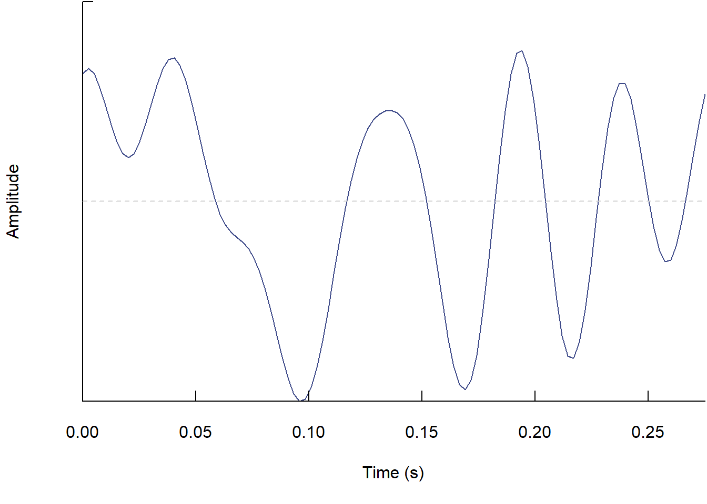
Code
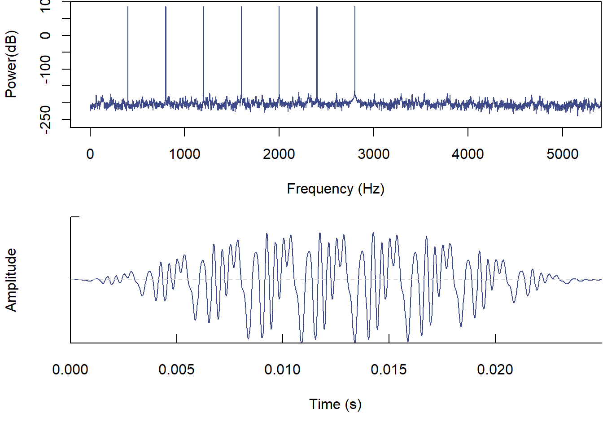
Negative
Code

Code

3.2.2 Schroeder with 10 components
Positive
Code
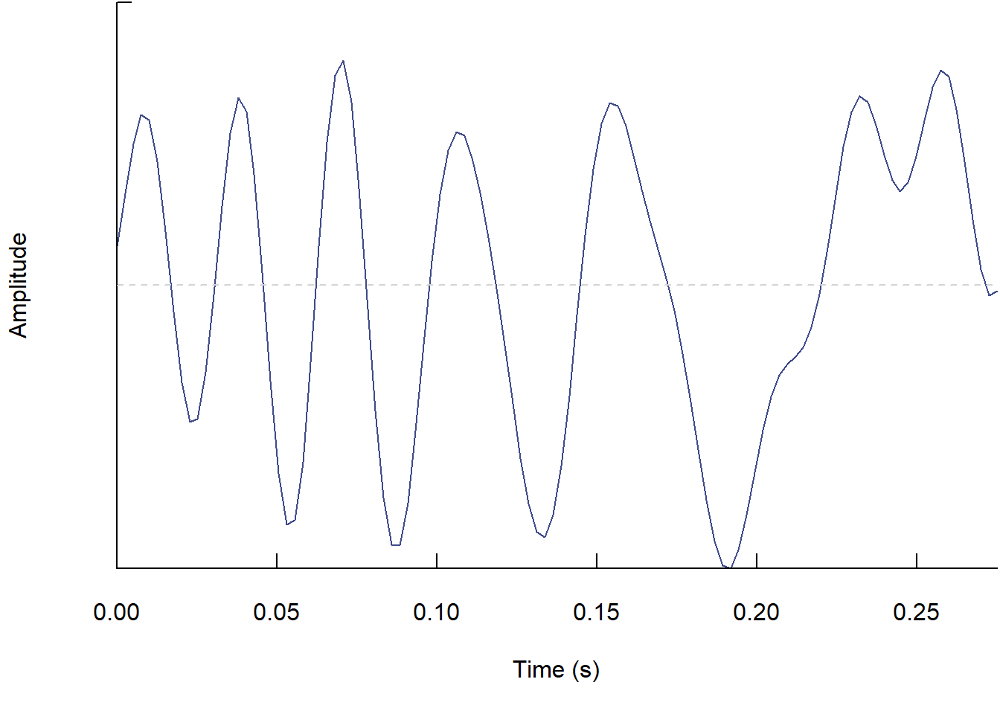
Code
Negative
Code
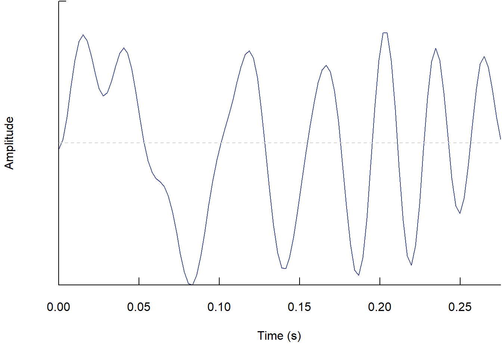
Code
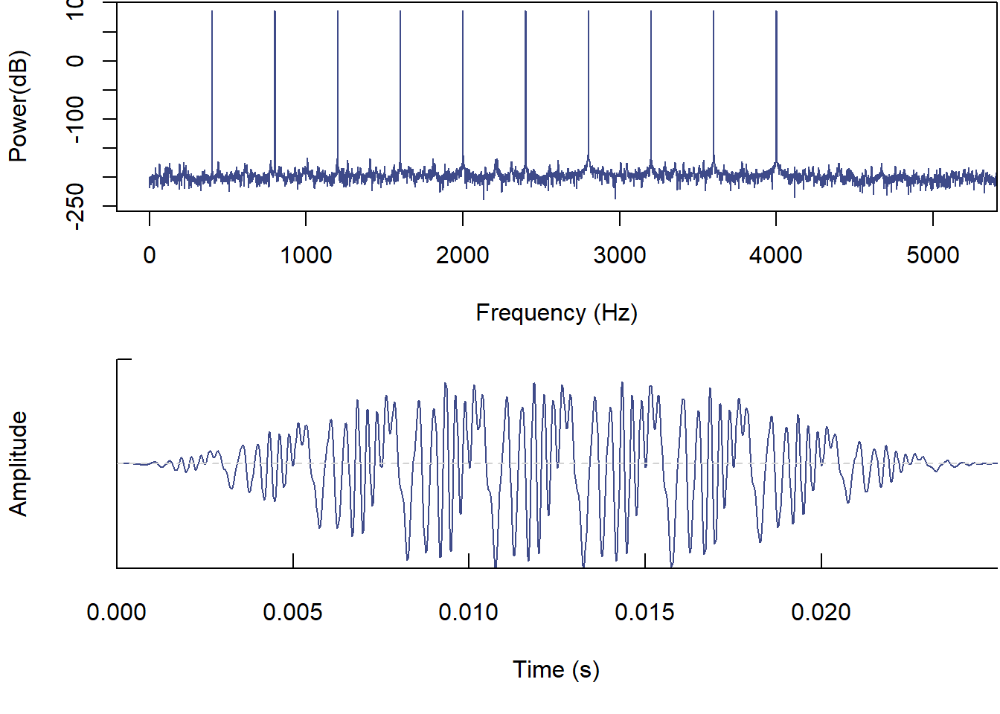
3.3 Make schroeders
Full factorial design of the following features:
- Components: from 5 to 25 (21 values)
- Fundamental frequency: from 200 to 800 (7 values)
- Phase: 1 and -1
- 294 schroeders
Create schroeders as individual sound files:
- 200 ms duration schroeders
Code
shr_tab <- expand.grid(type = c(-1, 1), components = seq(5, 25, 1),
f0 = seq(200, 800, 100))
nrow(shr_tab)
shr_tab$name <- paste0(f_pad_zero(x = 1:nrow(shr_tab), width = 3),
"_f0-", shr_tab$f0, "_ncomp-", shr_tab$components, "_", ifelse(shr_tab$type ==
1, "pos", "neg"), ".wav")
out <- warbleR:::pblapply_wrblr_int(seq_len(nrow(shr_tab)), function(x) {
make_rep_schroeder(n.components = shr_tab$components[x], samp.rate = 44100,
f0 = shr_tab$f0[x], dur = 200, save.wave = TRUE, plot = FALSE,
scalar = shr_tab$type[x], color = "red", path = "./data/processed/200ms_schroeders",
file.name = shr_tab$name[x])
})- Single Schroeders
Code
shr_tab <- expand.grid(type = c(-1, 1), components = seq(5, 25, 1),
f0 = seq(200, 800, 100))
nrow(shr_tab)
shr_tab$name <- paste0(f_pad_zero(x = 1:nrow(shr_tab), width = 3),
"_f0-", shr_tab$f0, "_ncomp-", shr_tab$components, "_", ifelse(shr_tab$type ==
1, "pos", "neg"), ".wav")
out <- warbleR:::pblapply_wrblr_int(seq_len(nrow(shr_tab)), function(x) {
df <- make_single_schroeder(n.components = shr_tab$components[x],
samp.rate = 44100, f0 = shr_tab$f0[x], dur = 200, save.wave = TRUE,
plot = FALSE, scalar = shr_tab$type[x], color = "red", path = "./data/processed/single_schroeders",
file.name = shr_tab$name[x])
df$sound.files <- shr_tab$name[x]
df$selec <- x
return(df)
})
single_anns <- do.call(rbind, out)
write.csv(single_anns, "./data/processed/single_schroeders_annotations.csv",
row.names = FALSE)
est_single_schr <- warbleR::selection_table(single_anns, path = "./data/processed/single_schroeders",
extended = TRUE)
saveRDS(est_single_schr, "./data/processed/extended_selection_table_single_schroeders.RDS")Put repeated Schroeders into a extended selection table and a single sound file:
Code
# fix start
est_schr <- warbleR::selection_table(whole.recs = TRUE, path = "./data/processed/200ms_schroeders",
extended = TRUE)
est_schr$bottom.freq <- (as.numeric(gsub("f0-", "", (sapply(strsplit(est_schr$sound.files,
split = "_"), "[[", 2)))) - 50)/1000
est_schr$top.freq <- freq_range(X = est_schr, threshold = 2, fsmooth = 0.8,
parallel = 13)$top.freq
est_schr$f0 <- gsub("f0-", "", sapply(strsplit(est_schr$sound.files,
split = "_"), "[[", 2))
est_schr$label <- gsub("os.wav_1|eg.wav_1", "", sapply(strsplit(est_schr$sound.files,
split = "ncomp-"), "[[", 2))
saveRDS(est_schr, "./data/processed/extended_selection_table_200ms_schroeders.RDS")
master <- master_sound_file(X = est_schr, file.name = "200ms_schroeder_master",
dest.path = "./data/processed/", gap.duration = 0.8, cex = 14)
write.csv(master, "./data/processed/master_annotations_200ms_schroeders.csv",
row.names = FALSE)
master$f0 <- c("start_marker", paste("f0", est_schr$f0), "")
master$label <- c("marker", est_schr$label, "marker")
Rraven::exp_raven(master, file.name = "200ms_schroeders", path = "./data/processed/",
sound.file.path = "./data/processed/")
# warbleR::full_spectrograms(master, path = './data/processed/',
# sxrow =
# duration(readWave('./data/processed/200ms_schroeder_master.wav'))
# / 12, rows = 12, horizontal = TRUE, dest.path =
# './data/processed/spectrograms', collevels = seq(-150, 0, 5),
# labels = 'label', song = 'f0', wl = 2000)Code
exp_est(est_schr, path = "./data/raw/extended_selection_table_schroeders_clips",
file.name = "annotations")
est_schr <- resample_est(est_schr, bit.depth = 32)
# add silence
for (i in seq_len(nrow(est_schr))) {
wv <- read_sound_file(est_schr, index = i)
wv <- normalize(wv, unit = "32")
# make it a 200 ms cut
wv <- cutw(wave = wv, from = 0, to = 0.2, output = "Wave")
# sil <- runif(min = min(wv@left) / 7, max = max(wv@left) /
# 7, n = wv@samp.rate / 10) wv@left <- c(sil, wv@left, sil)
# wv <- addsilw(wave = wv, at = 'end', d = 0.1, f = 44100,
# output = 'Wave', ) wv <- addsilw(wave = wv, at = 'start',
# d = 0.1, f = 44100, output = 'Wave')
spectro(wv)
filename <- file.path("./data/raw/extended_selection_table_schroeders_clips/200ms",
gsub("_1$", "", est_schr$sound.files[i]))
writeWave(object = wv, filename = filename, extensible = FALSE)
}
# fix_wavs(path =
# './data/raw/extended_selection_table_schroeders_clips/200ms')4 Measuring schroeder dissimilarity
We compare 9 methods for measuring acoustic structure (Table 1 in the manuscript), some of them implemented in more than one software package:
- Dynamic time warping (DTW) distances from schroeder waveform (repeated and single cycle)
- Waveform correlation (repeated and single cycle)
- Raven’s spectrographic features
- warbleR’s spectrographic features
- warbleR’s MFCC features
- warbleR’s cross-correlation of fourier spectrograms
- Raven’s cross-correlation of fourier spectrograms
- Raven’s waveform correlation
- warbleR’s cross-correlation of mel-frequency spectrograms
- Sound Analysis Pro harmonic goodness, pitch and amplitude modulation differences
Statistical modeling:
- Multiple Regression on distance Matrices
- Model:
\[\begin{align*} Dissimilarity &\sim frequency + components + phase \end{align*}\] - Response values scaled to make effect sizes comparable across models
- Predictors were coded as pairwise binary matrices in which 0 means that calls in a dyad belong to the same level and 1 means calls belong to different levels
4.1 Waveform DTW
- Using waveforms of 200 ms with repeated Schroeder cycles
- Computed with
warbleR::waveform_similarity(): amplitude vectors are normalized and resampled to 100 samples, one of them is duplicated and the other one is slid across the duplicated one (type = "sliding") - The minimum DTW distance across sliding steps is kept as a dissimilarity measure
- No band-pass filter is applied (
bp = NULL)
Code
schroeders <- readRDS("./data/processed/extended_selection_table_200ms_schroeders.RDS")
wv_sim <- waveform_similarity(X = schroeders, sim.method = "DTW",
type = "sliding", n = 100, bp = NULL, output = "rectangular")
# remove selection number suffix ('-1') from IDs
wv_sim <- data.frame(schr1 = gsub("-[0-9]+$", "", wv_sim$id.1), schr2 = gsub("-[0-9]+$",
"", wv_sim$id.2), dist = wv_sim$similarity)
saveRDS(wv_sim, "./data/processed/dtw_distance_ac_segments_200ms_schroeders.RDS")Code
min_dists <- readRDS("./data/processed/dtw_distance_ac_segments_200ms_schroeders.RDS")
min_dists$dist <- scale(min_dists$dist)
dist_tri <- PhenotypeSpace::rectangular_to_triangular(min_dists)
freq_bi_tri <- as.dist(binary_triangular_matrix(group = sapply(strsplit(rownames(dist_tri),
"_"), "[[", 2)))
comp_bi_tri <- as.dist(binary_triangular_matrix(group = gsub("_n|_p",
"", sapply(strsplit(rownames(dist_tri), "_"), "[[", 3))))
sign_bi_tri <- as.dist(binary_triangular_matrix(group = sapply(strsplit(rownames(dist_tri),
"_"), "[[", 4)))
rect_var <- cbind(as.dist(dist_tri), freq_bi_tri, comp_bi_tri, sign_bi_tri)
colnames(rect_var) <- c("dtw_dist", "frequency", "components", "sign")
set.seed(123)
dtw_wv_mod <- MRM2(formula = dtw_dist ~ frequency + components + sign,
nperm = 10000, mat = rect_var)
saveRDS(dtw_wv_mod, "./data/processed/matrix_correlation_dtw_distance_200ms_schroeders.RDS")Code
$coef
dtw_dist pval
Int -1.01906297 0.0001
frequency 0.97667642 0.0001
components 0.17603941 0.0001
sign 0.02157794 0.0272
$r.squared
R2 pval
0.1151998 0.0001000
$F.test
F F.pval
1869.0880 0.0001
$n
[1] 2944.2 Single Schroeder DTW
- Using a single cycle of each Schroeder
- Computed with
warbleR::waveform_similarity(): amplitude vectors are normalized and resampled to 100 samples, one of them is duplicated and the other one is slid across the duplicated one (type = "sliding") - The minimum DTW distance across sliding steps is kept as a dissimilarity measure
- No band-pass filter is applied (
bp = NULL)
Code
schroeders <- readRDS("./data/processed/extended_selection_table_single_schroeders.RDS")
wv_sim <- waveform_similarity(X = schroeders, sim.method = "DTW",
type = "sliding", n = 100, bp = NULL, output = "rectangular")
# remove selection number suffix ('-1') from IDs
wv_sim <- data.frame(schr1 = gsub("-[0-9]+$", "", wv_sim$id.1), schr2 = gsub("-[0-9]+$",
"", wv_sim$id.2), dist = wv_sim$similarity)
saveRDS(wv_sim, "./data/processed/dtw_distance_ac_segments_single_schroeders.RDS")Code
min_dists <- readRDS("./data/processed/dtw_distance_ac_segments_single_schroeders.RDS")
min_dists$dist <- scale(min_dists$dist)
dist_tri <- PhenotypeSpace::rectangular_to_triangular(min_dists)
freq_bi_tri <- as.dist(binary_triangular_matrix(group = sapply(strsplit(rownames(dist_tri),
"_"), "[[", 2)))
comp_bi_tri <- as.dist(binary_triangular_matrix(group = gsub("_n|_p",
"", sapply(strsplit(rownames(dist_tri), "_"), "[[", 3))))
sign_bi_tri <- as.dist(binary_triangular_matrix(group = sapply(strsplit(rownames(dist_tri),
"_"), "[[", 4)))
rect_var <- cbind(as.dist(dist_tri), freq_bi_tri, comp_bi_tri, sign_bi_tri)
colnames(rect_var) <- c("dtw_dist", "frequency", "components", "sign")
set.seed(123)
sngl_dtw_wv_mod <- MRM2(formula = dtw_dist ~ frequency + components +
sign, nperm = 10000, mat = rect_var)
saveRDS(sngl_dtw_wv_mod, "./data/processed/matrix_correlation_dtw_distance_single_schroeders.RDS")Code
$coef
dtw_dist pval
Int -1.656790331 0.0001
frequency 0.003647731 0.7474
components 1.435963590 0.0001
sign 0.560887982 0.0001
$r.squared
R2 pval
0.1634196 0.0001000
$F.test
F F.pval
2804.2704 0.0001
$n
[1] 2944.3 Waveform correlation
- Using waveforms of 200 ms with repeated Schroeder cycles
- Computed with
warbleR::waveform_similarity(): amplitude vectors are normalized and resampled to 100 samples, one of them is duplicated and the other one is slid across the duplicated one (type = "sliding") - The maximum Pearson correlation across sliding steps is kept as a similarity measure
- No band-pass filter is applied (
bp = NULL)
Code
schroeders <- readRDS("./data/processed/extended_selection_table_200ms_schroeders.RDS")
wv_sim <- waveform_similarity(X = schroeders, sim.method = "correlation",
type = "sliding", n = 100, bp = NULL, output = "rectangular")
# remove selection number suffix ('-1') from IDs
wv_sim <- data.frame(schr1 = gsub("-[0-9]+$", "", wv_sim$id.1), schr2 = gsub("-[0-9]+$",
"", wv_sim$id.2), cor = wv_sim$similarity)
saveRDS(wv_sim, "./data/processed/waveform_correlation_200ms_schroeders.RDS")Code
cors <- readRDS("./data/processed/waveform_correlation_200ms_schroeders.RDS")
# make it a distance
cors$cor <- scale(1 - cors$cor)
dist_tri <- PhenotypeSpace::rectangular_to_triangular(cors)
freq_bi_tri <- as.dist(binary_triangular_matrix(group = sapply(strsplit(rownames(dist_tri),
"_"), "[[", 2)))
comp_bi_tri <- as.dist(binary_triangular_matrix(group = gsub("_n|_p",
"", sapply(strsplit(rownames(dist_tri), "_"), "[[", 3))))
sign_bi_tri <- as.dist(binary_triangular_matrix(group = sapply(strsplit(rownames(dist_tri),
"_"), "[[", 4)))
rect_var <- cbind(as.dist(dist_tri), freq_bi_tri, comp_bi_tri, sign_bi_tri)
colnames(rect_var) <- c("dtw_dist", "frequency", "components", "sign")
set.seed(123)
cor_wv_mod <- MRM2(formula = dtw_dist ~ frequency + components + sign,
nperm = 10000, mat = rect_var)
saveRDS(cor_wv_mod, "./data/processed/matrix_correlation_waveform_correlation_200ms_schroeders.RDS")Code
$coef
dtw_dist pval
Int -1.49697967 0.0001
frequency 1.65973179 0.0001
components 0.01806886 0.3238
sign 0.10410444 0.0001
$r.squared
R2 pval
0.3335816 0.0001000
$F.test
F F.pval
7185.8562 0.0001
$n
[1] 2944.4 Single schroeder correlation
- Using a single cycle of each Schroeder
- Computed with
warbleR::waveform_similarity(): amplitude vectors are normalized and resampled to 100 samples, one of them is duplicated and the other one is slid across the duplicated one (type = "sliding") - The maximum Pearson correlation across sliding steps is kept as a similarity measure
- No band-pass filter is applied (
bp = NULL)
Code
schroeders <- readRDS("./data/processed/extended_selection_table_single_schroeders.RDS")
wv_sim <- waveform_similarity(X = schroeders, sim.method = "correlation",
type = "sliding", n = 100, bp = NULL, output = "rectangular")
# remove selection number suffix ('-1') from IDs
wv_sim <- data.frame(schr1 = gsub("-[0-9]+$", "", wv_sim$id.1), schr2 = gsub("-[0-9]+$",
"", wv_sim$id.2), cor = wv_sim$similarity)
saveRDS(wv_sim, "./data/processed/waveform_correlation_single_schroeders.RDS")Code
cors <- readRDS("./data/processed/waveform_correlation_single_schroeders.RDS")
# make it a distance
cors$cor <- scale(1 - cors$cor)
dist_tri <- PhenotypeSpace::rectangular_to_triangular(cors)
freq_bi_tri <- as.dist(binary_triangular_matrix(group = sapply(strsplit(rownames(dist_tri),
"_"), "[[", 2)))
comp_bi_tri <- as.dist(binary_triangular_matrix(group = gsub("_n|_p",
"", sapply(strsplit(rownames(dist_tri), "_"), "[[", 3))))
sign_bi_tri <- as.dist(binary_triangular_matrix(group = sapply(strsplit(rownames(dist_tri),
"_"), "[[", 4)))
rect_var <- cbind(as.dist(dist_tri), freq_bi_tri, comp_bi_tri, sign_bi_tri)
colnames(rect_var) <- c("dtw_dist", "frequency", "components", "sign")
set.seed(123)
sngl_cor_wv_mod <- MRM2(formula = dtw_dist ~ frequency + components +
sign, nperm = 10000, mat = rect_var)
saveRDS(sngl_cor_wv_mod, "./data/processed/matrix_correlation_waveform_correlation_single_schroeders.RDS")Code
$coef
dtw_dist pval
Int -1.7867059 0.0001
frequency -0.0361176 0.0038
components 1.4893583 0.0001
sign 0.7863002 0.0001
$r.squared
R2 pval
0.2453437 0.0001000
$F.test
F F.pval
4667.1216 0.0001
$n
[1] 2944.5 Raven’s spectrographic features
Code
rav_dat <- imp_raven(path = "./data/processed", files = "200ms_schroeders.txt",
warbler.format = TRUE, all.data = TRUE)
rav_dat <- rav_dat[grep(pattern = "marker", rav_dat$sound.id, invert = TRUE),
]
rav_dat <- rav_dat[, grep("contour|PFC Slope", ignore.case = TRUE,
x = names(rav_dat), invert = TRUE)]
pca <- prcomp(x = rav_dat[, names(rav_dat) %in% c("Agg Entropy (bits)",
"Avg Entropy (bits)", "Avg Power Density (dB FS/Hz)", "BW 50% (Hz)",
"BW 90% (Hz)", "Center Freq (Hz)", "Center Time Rel.", "Delta Freq (Hz)",
"Dur 50% (s)", "Dur 90% (s)", "Energy (dB FS)", "Freq 25% (Hz)",
"Freq 5% (Hz)", "Freq 75% (Hz)", "Freq 95% (Hz)", "Inband Power (dB FS)",
"Max Entropy (bits)", "Max Freq (Hz)", "Min Entropy (bits)", "Peak Freq (Hz)",
"PFC Avg Slope (Hz/ms)", "PFC Max Freq (Hz)", "PFC Max Slope (Hz/ms)",
"PFC Min Freq (Hz)", "PFC Min Slope (Hz/ms)", "PFC Num Inf Pts",
"Peak Power Density (dB FS/Hz)", "Peak Time (s)", "Peak Time Relative",
"Time 25% (s)", "Time 25% Rel.", "Time 5% (s)", "Time 5% Rel.",
"Time 75% (s)", "Time 75% Rel.", "Time 95% (s)", "Time 95% Rel.")],
scale. = TRUE)
rav_dat$pc1 <- pca$x[, 1]
rav_dat$pc2 <- pca$x[, 2]
rav_dat$comp <- sapply(strsplit(rav_dat$label, "_"), "[[", 1)
rav_dat$sign <- sapply(strsplit(rav_dat$label, "_"), "[[", 2)
rav_dat$label <- paste(rav_dat$f0, rav_dat$label, sep = "-")
dist_tri <- dist(rav_dat[, c("pc1", "pc2")])
freq_bi_tri <- as.dist(binary_triangular_matrix(group = rav_dat$f0))
comp_bi_tri <- as.dist(binary_triangular_matrix(group = rav_dat$comp))
sign_bi_tri <- as.dist(binary_triangular_matrix(group = rav_dat$sign))
rect_var <- cbind(as.dist(scale(as.matrix(dist_tri))), freq_bi_tri,
comp_bi_tri, sign_bi_tri)
colnames(rect_var) <- c("rav_dist", "frequency", "components", "sign")
set.seed(123)
rav_mod <- MRM2(formula = rav_dist ~ frequency + components + sign,
nperm = 10000, mat = rect_var)
saveRDS(rav_mod, "./data/processed/matrix_correlation_raven_measurements_distance_200ms_schroeders.RDS")Code
$coef
rav_dist pval
Int -1.313691913 0.0001
frequency 0.884850197 0.0001
components 0.656905001 0.0001
sign -0.004730867 0.5454
$r.squared
R2 pval
0.1007162 0.0001000
$F.test
F F.pval
1607.7775 0.0001
$n
[1] 2944.6 warbleR’s spectrographic features
Measure spectrographic features:
Statistical model:
Code
wsp <- readRDS("./data/processed/warbler_spectrographic_features_200ms_schroeders.RDS")
# keep columns with no NAs
wsp <- wsp[complete.cases(wsp), ]
pca <- prcomp(x = wsp[, -c(1:3)])
wsp$pc1 <- pca$x[, 1]
wsp$pc2 <- pca$x[, 2]
wsp_tri <- dist(wsp[, c("pc1", "pc2")])
freq_bi_tri <- as.dist(binary_triangular_matrix(group = substr(sapply(strsplit(wsp$sound.files,
"_"), "[[", 2), start = 4, 6)))
comp_bi_tri <- as.dist(binary_triangular_matrix(group = substr(sapply(strsplit(wsp$sound.files,
"_"), "[[", 3), start = 7, 8)))
sign_bi_tri <- as.dist(binary_triangular_matrix(group = ifelse(grepl("pos",
wsp$sound.files), "pos", "neg")))
rect_var <- cbind(as.dist(scale(as.matrix(wsp_tri))), freq_bi_tri,
comp_bi_tri, sign_bi_tri)
colnames(rect_var) <- c("wrbl_sp", "frequency", "components", "sign")
set.seed(123)
wrbl_mod <- MRM2(formula = wrbl_sp ~ frequency + components + sign,
nperm = 10000, mat = rect_var)
saveRDS(wrbl_mod, "./data/processed/matrix_correlation_warbler_measurements_distance_200ms_schroeder.RDS")Code
$coef
wrbl_sp pval
Int -0.868887055 0.0001
frequency 1.014984061 0.0001
components 0.057791772 0.0050
sign 0.001089815 0.8880
$r.squared
R2 pval
0.109935 0.000100
$F.test
F F.pval
1773.1184 0.0001
$n
[1] 2944.7 warbleR’s MFCC features
Measure MFCC descriptors:
Statistical model:
Code
wsp <- readRDS("./data/processed/warbler_mfcc_descriptors_200ms_schroeders.RDS")
# keep columns with no NAs
wsp <- wsp[complete.cases(wsp), ]
pca <- prcomp(x = wsp[, -c(1:3)])
wsp$pc1 <- pca$x[, 1]
wsp$pc2 <- pca$x[, 2]
wsp_tri <- dist(wsp[, c("pc1", "pc2")])
freq_bi_tri <- as.dist(binary_triangular_matrix(group = substr(sapply(strsplit(wsp$sound.files,
"_"), "[[", 2), start = 4, 6)))
comp_bi_tri <- as.dist(binary_triangular_matrix(group = substr(sapply(strsplit(wsp$sound.files,
"_"), "[[", 3), start = 7, 8)))
sign_bi_tri <- as.dist(binary_triangular_matrix(group = ifelse(grepl("pos",
wsp$sound.files), "pos", "neg")))
rect_var <- cbind(as.dist(scale(as.matrix(wsp_tri))), freq_bi_tri,
comp_bi_tri, sign_bi_tri)
colnames(rect_var) <- c("wrbl_sp", "frequency", "components", "sign")
set.seed(123)
mfcc_wrbl_mod <- MRM2(formula = wrbl_sp ~ frequency + components +
sign, nperm = 10000, mat = rect_var)
saveRDS(mfcc_wrbl_mod, "./data/processed/mfcc_warbler_distance_200ms_schroeders.RDS")$coef
wrbl_sp pval
Int -0.975754366 0.0001
frequency 1.079864077 0.0001
components 0.076157199 0.0010
sign -0.003342104 0.6652
$r.squared
R2 pval
0.1363803 0.0001000
$F.test
F F.pval
2267.0058 0.0001
$n
[1] 2944.8 warbleR’s fourier cross-correlation
Code
xc <- readRDS("./data/processed/fourier_cross_correlation_200ms_schroeders.RDS")
freq_bi_tri <- as.dist(binary_triangular_matrix(group = substr(sapply(strsplit(rownames(xc),
"_"), "[[", 2), start = 4, 6)))
comp_bi_tri <- as.dist(binary_triangular_matrix(group = substr(sapply(strsplit(rownames(xc),
"_"), "[[", 3), start = 7, 8)))
sign_bi_tri <- as.dist(binary_triangular_matrix(group = ifelse(grepl("pos",
rownames(xc)), "pos", "neg")))
rect_var <- cbind(as.dist(scale(1 - xc)), freq_bi_tri, comp_bi_tri,
sign_bi_tri)
colnames(rect_var) <- c("fourier_xc", "frequency", "components", "sign")
set.seed(123)
xc_mod <- MRM2(formula = fourier_xc ~ frequency + components + sign,
nperm = 10000, mat = rect_var)
saveRDS(xc_mod, "./data/processed/matrix_correlation_fourier_cross_correlation_200ms_schroeders.RDS")Code
$coef
fourier_xc pval
Int -1.26349363 0.0001
frequency 1.47923044 0.0001
components 0.18508315 0.0001
sign -0.00105614 0.8878
$r.squared
R2 pval
0.2273505 0.0001000
$F.test
F F.pval
4224.1242 0.0001
$n
[1] 2944.9 Raven’s fourier cross-correlation
- Hamming window function
- 512 samples FFT
- Un-normalized
- bandpass 0-22 kHz
Code
xc_rav <- Rraven::imp_corr_mat(file = "BatchCorrOutput_v3_hamming.txt",
path = "./data/processed")[[1]]
freq_bi_tri <- as.dist(binary_triangular_matrix(group = substr(sapply(strsplit(rownames(xc_rav),
"_"), "[[", 2), start = 4, 6)))
comp_bi_tri <- as.dist(binary_triangular_matrix(group = substr(sapply(strsplit(rownames(xc_rav),
"_"), "[[", 3), start = 7, 8)))
sign_bi_tri <- as.dist(binary_triangular_matrix(group = ifelse(grepl("pos",
rownames(xc_rav)), "pos", "neg")))
rect_var <- cbind(as.dist(scale(1 - xc_rav)), freq_bi_tri, comp_bi_tri,
sign_bi_tri)
colnames(rect_var) <- c("fourier_xc_rav", "frequency", "components",
"sign")
set.seed(123)
xc_rav_mod <- MRM2(formula = fourier_xc_rav ~ frequency + components +
sign, nperm = 10000, mat = rect_var)
saveRDS(xc_rav_mod, "./data/processed/matrix_correlation_raven_fourier_cross_correlation_200ms_schroeders.RDS")Code
$coef
fourier_xc_rav pval
Int -2.014130558 0.0001
frequency 2.231893880 0.0001
components 0.113853680 0.0001
sign -0.005230222 0.3246
$r.squared
R2 pval
0.610634 0.000100
$F.test
F F.pval
22513.6725 0.0001
$n
[1] 2944.10 Raven’s waveform correlation
Code
wav_cr_rav <- Rraven::imp_corr_mat(file = "raven_waveform_correlation_200ms_schroeders.txt",
path = "./data/processed")[[1]]
freq_bi_tri <- as.dist(binary_triangular_matrix(group = substr(sapply(strsplit(rownames(wav_cr_rav),
"_"), "[[", 2), start = 4, 6)))
comp_bi_tri <- as.dist(binary_triangular_matrix(group = substr(sapply(strsplit(rownames(wav_cr_rav),
"_"), "[[", 3), start = 7, 8)))
sign_bi_tri <- as.dist(binary_triangular_matrix(group = ifelse(grepl("pos",
rownames(wav_cr_rav)), "pos", "neg")))
rect_var <- cbind(as.dist(scale(1 - wav_cr_rav)), freq_bi_tri, comp_bi_tri,
sign_bi_tri)
colnames(rect_var) <- c("fourier_wav_cr_rav", "frequency", "components",
"sign")
set.seed(123)
wav_cr_rav_mod <- MRM2(formula = fourier_wav_cr_rav ~ frequency +
components + sign, nperm = 10000, mat = rect_var)
saveRDS(wav_cr_rav_mod, "./data/processed/matrix_correlation_raven_waveform_correlation_200ms_schroeders.RDS")Code
$coef
fourier_wav_cr_rav pval
Int -1.70648537 1e-04
frequency 1.89485351 1e-04
components 0.04435588 5e-03
sign 0.11919270 1e-04
$r.squared
R2 pval
0.4988993 0.0001000
$F.test
F F.pval
14292.5996 0.0001
$n
[1] 2944.11 warbleR’s mel-frequency cross-correlation
Code
xc <- readRDS("./data/processed/mel_frequency_cross_correlation_200ms_schroeders.RDS")
freq_bi_tri <- as.dist(binary_triangular_matrix(group = substr(sapply(strsplit(rownames(xc),
"_"), "[[", 2), start = 4, 6)))
comp_bi_tri <- as.dist(binary_triangular_matrix(group = substr(sapply(strsplit(rownames(xc),
"_"), "[[", 3), start = 7, 8)))
sign_bi_tri <- as.dist(binary_triangular_matrix(group = ifelse(grepl("pos",
rownames(xc)), "pos", "neg")))
rect_var <- cbind(as.dist(scale(1 - xc)), freq_bi_tri, comp_bi_tri,
sign_bi_tri)
colnames(rect_var) <- c("mel_xc", "frequency", "components", "sign")
set.seed(123)
mxc_mod <- MRM2(formula = mel_xc ~ frequency + components + sign,
nperm = 10000, mat = rect_var)
saveRDS(mxc_mod, "./data/processed/matrix_correlation_mel_cross_correlation_200ms_schroeders.RDS")Code
$coef
mel_xc pval
Int -1.262642488 0.0001
frequency 1.256694806 0.0001
components 0.248868505 0.0001
sign 0.002007171 0.7868
$r.squared
R2 pval
0.1796265 0.0001000
$F.test
F F.pval
3143.2731 0.0001
$n
[1] 2944.12 SAP harmonic goodness
- SAP: sound analysis pro
- This analysis was done on 200 ms clips as longer clips did not run in SAP
Code
simil_sap <- readxl::read_xlsx("./data/raw/200ms_SAPsim.xlsx")
# number of pairwise comparisons posibles
clips <- unique(c(simil_sap$`Sound 1`, simil_sap$`Sound 2`))
ncol(poss_combs <- combn(clips, 2))
poss_combs <- t(poss_combs)
poss_dyad <- sapply(seq_len(nrow(poss_combs)), function(x) {
paste(sort(c(poss_combs[x, 1], poss_combs[x, 2])), collapse = "|")
})
simil_sap$dyad <- sapply(seq_len(nrow(simil_sap)), function(x) {
paste(sort(c(simil_sap$`Sound 1`[x], simil_sap$`Sound 2`[x])),
collapse = "|")
})
# remove duplicated dyads
simil_sap <- simil_sap[!duplicated(simil_sap$dyad), ]
# remove self comparisons
simil_sap <- simil_sap[!simil_sap$`Sound 1` == simil_sap$`Sound 2`,
]
nrow(simil_sap)
# missing dyads
missing <- poss_dyad[!poss_dyad %in% simil_sap$dyad]
# split missing by |
missing <- unique(c(sapply(strsplit(missing, "|", fixed = TRUE), "[[",
1), sapply(strsplit(missing, "|", fixed = TRUE), "[[", 2)))
# remove missing clips
simil_sap <- simil_sap[!(simil_sap$`Sound 1` %in% missing | simil_sap$`Sound 2` %in%
missing), ]
# convert to distance
simil_sap$`Goodness diff` <- simil_sap$`Goodness diff` * -1
# get symmetric triangular matrix
dist_sap <- rectangular_to_triangular(as.data.frame(simil_sap[, c("Sound 1",
"Sound 2", "Goodness diff")]))
freq_bi_tri <- as.dist(binary_triangular_matrix(group = substr(sapply(strsplit(rownames(dist_sap),
"_"), "[[", 2), start = 4, 6)))
comp_bi_tri <- as.dist(binary_triangular_matrix(group = substr(sapply(strsplit(rownames(dist_sap),
"_"), "[[", 3), start = 7, 8)))
sign_bi_tri <- as.dist(binary_triangular_matrix(group = ifelse(grepl("pos",
rownames(dist_sap)), "pos", "neg")))
rect_var <- cbind(as.dist(scale(1 - dist_sap)), freq_bi_tri, comp_bi_tri,
sign_bi_tri)
colnames(rect_var) <- c("dist_sap", "frequency", "components", "sign")
rect_var[is.na(rect_var[, 1]), 1] <- mean(rect_var[, 1], na.rm = TRUE)
set.seed(123)
good_sap_mod <- MRM2(formula = dist_sap ~ frequency + components +
sign, nperm = 10000, mat = rect_var)
saveRDS(good_sap_mod, "./data/processed/matrix_correlation_sound_analysis_pro_goodness_200_ms_clips.RDS")Code
$coef
dist_sap pval
Int -0.711874155 0.0001
frequency 1.182727718 0.0001
components -0.009919279 0.6020
sign -0.000160463 0.9863
$r.squared
R2 pval
0.1197922 0.0001000
$F.test
F F.pval
1953.7405 0.0001
$n
[1] 2944.13 SAP pitch difference
- SAP: sound analysis pro
- This analysis was done on 200 ms clips as longer clips did not run in SAP
Code
simil_sap <- readxl::read_xlsx("./data/raw/200ms_SAPsim.xlsx")
# number of pairwise comparisons posibles
clips <- unique(c(simil_sap$`Sound 1`, simil_sap$`Sound 2`))
ncol(poss_combs <- combn(clips, 2))
poss_combs <- t(poss_combs)
poss_dyad <- sapply(seq_len(nrow(poss_combs)), function(x) {
paste(sort(c(poss_combs[x, 1], poss_combs[x, 2])), collapse = "|")
})
simil_sap$dyad <- sapply(seq_len(nrow(simil_sap)), function(x) {
paste(sort(c(simil_sap$`Sound 1`[x], simil_sap$`Sound 2`[x])),
collapse = "|")
})
# remove duplicated dyads
simil_sap <- simil_sap[!duplicated(simil_sap$dyad), ]
# remove self comparisons
simil_sap <- simil_sap[!simil_sap$`Sound 1` == simil_sap$`Sound 2`,
]
nrow(simil_sap)
# missing dyads
missing <- poss_dyad[!poss_dyad %in% simil_sap$dyad]
# split missing by |
missing <- unique(c(sapply(strsplit(missing, "|", fixed = TRUE), "[[",
1), sapply(strsplit(missing, "|", fixed = TRUE), "[[", 2)))
# remove missing clips
simil_sap <- simil_sap[!(simil_sap$`Sound 1` %in% missing | simil_sap$`Sound 2` %in%
missing), ]
# convert to distance
simil_sap$`Pitch diff` <- simil_sap$`Pitch diff` * -1
# get symmetric triangular matrix
dist_sap <- rectangular_to_triangular(as.data.frame(simil_sap[, c("Sound 1",
"Sound 2", "Pitch diff")]))
freq_bi_tri <- as.dist(binary_triangular_matrix(group = substr(sapply(strsplit(rownames(dist_sap),
"_"), "[[", 2), start = 4, 6)))
comp_bi_tri <- as.dist(binary_triangular_matrix(group = substr(sapply(strsplit(rownames(dist_sap),
"_"), "[[", 3), start = 7, 8)))
sign_bi_tri <- as.dist(binary_triangular_matrix(group = ifelse(grepl("pos",
rownames(dist_sap)), "pos", "neg")))
rect_var <- cbind(as.dist(scale(1 - dist_sap)), freq_bi_tri, comp_bi_tri,
sign_bi_tri)
colnames(rect_var) <- c("dist_sap", "frequency", "components", "sign")
rect_var[is.na(rect_var[, 1]), 1] <- mean(rect_var[, 1], na.rm = TRUE)
set.seed(123)
pitch_diff_mod <- MRM2(formula = dist_sap ~ frequency + components +
sign, nperm = 10000, mat = rect_var)
saveRDS(pitch_diff_mod, "./data/processed/matrix_correlation_sound_analysis_pro_pitch_diff_200_ms_clips.RDS")Code
$coef
dist_sap pval
Int -0.26814278 0.0001
frequency 0.12204666 0.0001
components 0.10396671 0.0001
sign 0.01128282 0.0829
$r.squared
R2 pval
0.003378295 0.000100000
$F.test
F F.pval
48.66207 0.00010
$n
[1] 2944.14 SAP amplitude modulation
- SAP: sound analysis pro
- This analysis was done on 200 ms clips as longer clips did not run in SAP
Code
simil_sap <- readxl::read_xlsx("./data/raw/200ms_SAPsim.xlsx")
# number of pairwise comparisons posibles
clips <- unique(c(simil_sap$`Sound 1`, simil_sap$`Sound 2`))
ncol(poss_combs <- combn(clips, 2))
poss_combs <- t(poss_combs)
poss_dyad <- sapply(seq_len(nrow(poss_combs)), function(x) {
paste(sort(c(poss_combs[x, 1], poss_combs[x, 2])), collapse = "|")
})
simil_sap$dyad <- sapply(seq_len(nrow(simil_sap)), function(x) {
paste(sort(c(simil_sap$`Sound 1`[x], simil_sap$`Sound 2`[x])),
collapse = "|")
})
# remove duplicated dyads
simil_sap <- simil_sap[!duplicated(simil_sap$dyad), ]
# remove self comparisons
simil_sap <- simil_sap[!simil_sap$`Sound 1` == simil_sap$`Sound 2`,
]
nrow(simil_sap)
# missing dyads
missing <- poss_dyad[!poss_dyad %in% simil_sap$dyad]
# split missing by |
missing <- unique(c(sapply(strsplit(missing, "|", fixed = TRUE), "[[",
1), sapply(strsplit(missing, "|", fixed = TRUE), "[[", 2)))
# remove missing clips
simil_sap <- simil_sap[!(simil_sap$`Sound 1` %in% missing | simil_sap$`Sound 2` %in%
missing), ]
# get symmetric triangular matrix
dist_sap <- rectangular_to_triangular(as.data.frame(simil_sap[, c("Sound 1",
"Sound 2", "AM diff")]))
freq_bi_tri <- as.dist(binary_triangular_matrix(group = substr(sapply(strsplit(rownames(dist_sap),
"_"), "[[", 2), start = 4, 6)))
comp_bi_tri <- as.dist(binary_triangular_matrix(group = substr(sapply(strsplit(rownames(dist_sap),
"_"), "[[", 3), start = 7, 8)))
sign_bi_tri <- as.dist(binary_triangular_matrix(group = ifelse(grepl("pos",
rownames(dist_sap)), "pos", "neg")))
rect_var <- cbind(as.dist(scale(1 - dist_sap)), freq_bi_tri, comp_bi_tri,
sign_bi_tri)
colnames(rect_var) <- c("dist_sap", "frequency", "components", "sign")
rect_var[is.na(rect_var[, 1]), 1] <- mean(rect_var[, 1], na.rm = TRUE)
set.seed(123)
am_sap_mod <- MRM2(formula = dist_sap ~ frequency + components + sign,
nperm = 10000, mat = rect_var)
saveRDS(am_sap_mod, "./data/processed/matrix_correlation_sound_analysis_pro_amplitude_modulation_200_ms_clips.RDS")Code
$coef
dist_sap pval
Int -0.0239282366 0.2762
frequency 0.0160426132 0.0123
components -0.0075928468 0.4679
sign 0.0008302052 0.8086
$r.squared
R2 pval
3.116584e-05 6.900000e-02
$F.test
F F.pval
0.4474203 0.0690000
$n
[1] 2944.15 Combined results (Fig. 6)
Code
mods <- list(`waveform DTW (wblR, rep)` = dtw_wv_mod, `waveform DTW (wblR, sngl)` = sngl_dtw_wv_mod,
`waveform correlation (wblR, rep)` = cor_wv_mod, `waveform correlation (wblR, sngl)` = sngl_cor_wv_mod,
`spectro-temporal features (wblR)` = wrbl_mod, `MFCC descriptors (wblR)` = mfcc_wrbl_mod,
`spectro-temporal features (Rvn)` = rav_mod, `linear freq. cross-correlation (wblR)` = xc_mod,
`mel freq. cross-correlation (wblR)` = mxc_mod, `waveform correlation (Rvn, rep)` = wav_cr_rav_mod,
`linear freq. cross-correlation (Rvn)` = xc_rav_mod, `harmonic goodness (SAP)` = good_sap_mod,
`pitch differences (SAP)` = pitch_diff_mod, `amplitude modulation (SAP)` = am_sap_mod)
estimates <- do.call(rbind, lapply(seq_along(mods), function(x) {
Y <- data.frame(mods[[x]]$coef[-1, ])
Y$rel_coef <- Y[, 1]/max(Y[, 1])
Y$mod <- names(mods)[x]
Y$predictor <- rownames(Y)
names(Y) <- c("coef", "p", "rel_coef", "model", "predictor")
return(Y)
}))
estimates$rel_coef <- ifelse(estimates$p < 0.05, estimates$rel_coef,
0)
estimates$signif <- ifelse(estimates$p < 0.05, "p < 0.05", "p >= 0.05")
# sort factor level by rel_coef
estimates$model <- factor(estimates$model, levels = estimates$model[estimates$predictor ==
"sign"][order(estimates$coef[estimates$predictor == "sign"], decreasing = TRUE)])
estimates$predictor <- gsub("sign", "Phase", estimates$predictor)
estimates$predictor <- levels(factor(estimates$predictor, levels = c("Frequency",
"Harmonics", "Phase")))
gg_effects <- ggplot(estimates, aes(x = predictor, y = model, fill = coef)) +
geom_tile() + coord_equal() + scale_fill_gradient2(low = mako(10)[3],
high = mako(10)[7], guide = "none") + geom_text(aes(label = round(coef,
3), color = signif), size = 4) + scale_color_manual(values = c("black",
"gray")) + labs(x = "", y = "", color = "P value") + theme_classic() +
theme(axis.text.x = element_text(color = "black", size = 12, angle = 45,
vjust = 0.95, hjust = 0.9), axis.text.y = element_text(color = "black",
size = 13))
gg_effects <- gg_effects + coord_flip()
ggsave(filename = "./output/figures/fig6_effect_sizes_by_method.png",
plot = gg_effects, width = 10, height = 5, dpi = 300, units = "in")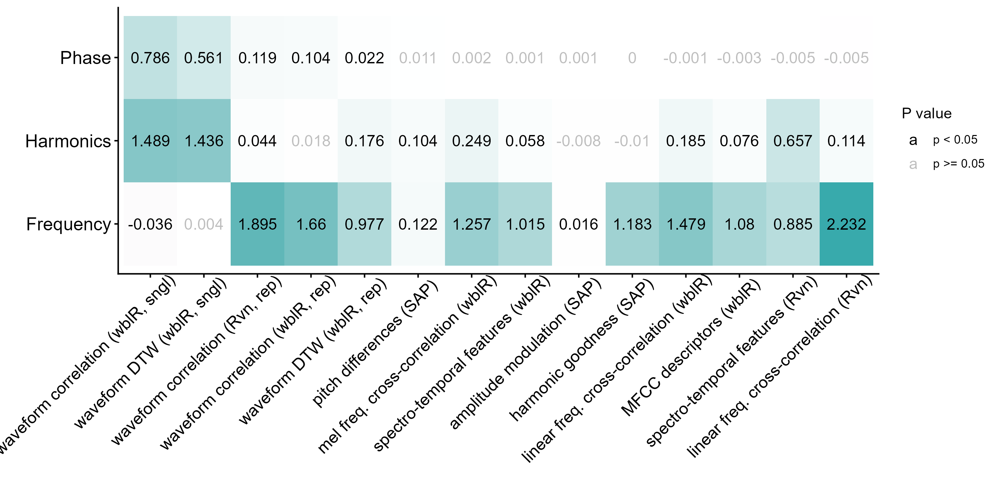
5 Takeaways
- Waveform correlation works better at getting periodicity
- Dynamic time warping dissimilarity on mean periods, Raven’s waveform correlation and (to some extent) Fourier cross-correlation did capture phase differences in Schroeders
- Raven waveform correlation remove differences in frequency when forcing all periods to have the same number of values (i.e. same length)
6 Additional figures
Fig. 5: Shroeder 200 ms MFCCs and linear spectrograms and waveforms (the two panels were combined into a single figure outside R: output/figures/fig5_schroeder_representations_combined.png)
Code
grp_df <- data.frame(schr = c("f0-400_ncomp-7_neg.wav_1", "f0-400_ncomp-7_pos.wav_1"),
from = c(0.05037, 0.05037), to = c(0.0554, 0.0554))
grp_df[2, 2:3] <- grp_df[2, 2:3] + 0.00121
flim <- c(0, 3.5)
cx <- 0.8
est_200ms <- readRDS("./data/processed/extended_selection_table_200ms_schroeders.RDS")
est_200ms$sf <- substr(est_200ms$sound.files, start = 5, stop = 1000)
grp_df$file <- c("./output/figures/fig5a_schroeder_negative_phase.jpg",
"./output/figures/fig5b_schroeder_positive_phase.jpg")
for (i in 1:nrow(grp_df)) {
jpeg(file = grp_df$file[i], width = 1600, height = 1500, res = 300)
wv_200ms_1 <- read_sound_file(est_200ms, index = which(est_200ms$sf ==
grp_df$schr[i]))
silence <- rep(0, wv_200ms_1@samp.rate/20)
schroeder <- c(silence, wv_200ms_1@left, silence)
sil_wv_200ms_1 <- tuneR::normalize(tuneR::Wave(schroeder, samp.rate = wv_200ms_1@samp.rate,
bit = 16), unit = "16")
mat <- matrix(c(1, 2, 6, 3, 7, 4, 8, 5), ncol = 2, byrow = TRUE)
layout(mat, widths = c(0.3, 0.9), heights = c(0.85, 0.75, 1, 1.1))
# layout.show(n = 8)
spc <- seewave::meanspec(wave = wv_200ms_1, plot = FALSE, ovlp = 50,
wl = 2100)
par(mar = c(0, 5, 1, 0))
plot(spc[, 2:1], type = "l", ylab = "", xlab = "", ylim = flim,
col = mako(10)[4], lwd = 2, xaxt = "n", yaxt = "n", xaxs = "i",
yaxs = "i")
text(x = 0.1, y = flim[2] - 0.35, labels = "a", cex = cx + 1)
polygon(x = spc[, 2], y = spc[, 1], col = mako(10)[4], border = NA)
axis(2, cex.axis = cx)
mtext(text = "Frequency (kHz)", side = 2, line = 2.4, adj = 0.5,
cex = cx)
# mtext(text = 'Amplitude \n(dB) ', side = 1, line = 1.5,
# adj = 0.5, cex = cx)
mtext(text = "Spectral\npower", side = 1, line = 1.5, adj = 0,
cex = cx, at = -0.1)
mtext(ifelse(i == 1, "A", "B"), side = 2, line = 3.8, at = 3.5,
las = 1, cex = 1.5)
par(mar = c(0, 0, 1, 1))
# create color palette
cp <- colorRampPalette(c("white", "white", "white", "white", "gray",
"gray", viridis::mako(10, begin = 0.4)))
warbleR:::spectro_wrblr_int2(sil_wv_200ms_1, flim = flim, wl = 800,
palette = cp, grid = FALSE, collevels = seq(-60, 0, 1), ovlp = 10,
zp = 100, axisY = FALSE, flab = "", axisX = FALSE)
text(x = 0.0055, y = flim[2] - 0.35, labels = "b", cex = cx +
1)
cp2 <- colorRampPalette(c(viridis::mako(10, begin = 0.4), "gray",
"white"))
par(mar = c(0, 0, 0, 1))
mel_spectro(addsilw(sil_wv_200ms_1, at = "start", d = 0.002, output = "Wave"),
flim = flim, wl = 800, palette = cp2, ncep = 29, ovlp = 90,
axisY = FALSE, axisX = FALSE)
text(x = -0.008, y = 0.9, labels = "c", cex = cx + 1)
axis(2, cex.axis = cx, at = seq(0, 1, length.out = 29)[1:28],
labels = 1:28)
mtext(text = "MFCCs", side = 2, line = 2.4, adj = 0.35, cex = cx)
par(mar = c(3, 0, 0, 1))
plot(sil_wv_200ms_1@left, type = "l", xlab = "", col = mako(10)[6],
lwd = 1.6, xaxt = "n", yaxt = "n", xaxs = "i")
# add amplitude envelope
amp_env <- env(sil_wv_200ms_1, envt = "abs", ssmooth = 300, plot = FALSE)
amp_env <- amp_env * max(sil_wv_200ms_1@left)/max(amp_env)
lines(x = seq(1, length(sil_wv_200ms_1@left), length.out = nrow(amp_env)),
y = amp_env[, 1], col = adjustcolor("yellow", alpha.f = 0.7),
lwd = 3)
text(x = 300, y = 20000, labels = "d", cex = cx + 1)
mtext(text = "Amplitude\n(dB)", side = 2, line = 1, cex = cx)
indx <- round(0.101 * sil_wv_200ms_1@samp.rate, 0):round(0.106 *
sil_wv_200ms_1@samp.rate, 0)
sub <- sil_wv_200ms_1@left[indx]
lines(x = indx, y = sub, type = "l", col = mako(10)[9], lwd = 2)
abline(v = 0.101 * sil_wv_200ms_1@samp.rate, col = "gray4", lty = 2)
abline(v = 0.106 * sil_wv_200ms_1@samp.rate, col = "gray4", lty = 2)
at <- seq(0, length.out = 5, by = 0.2 * length(sil_wv_200ms_1@left))
labs <- seq(0, duration(sil_wv_200ms_1), length.out = 5)
at <- labs * sil_wv_200ms_1@samp.rate
axis(1, at = at, labels = labs, cex.axis = cx)
mtext(text = "Time (s)", side = 1, line = 2.4, adj = 0.5, cex = cx)
par(mar = c(3, 0, 1, 1))
# clp_200ms_1 <- read_sound_file(est_single, index =
# which(est_schr$sf == schr1)) clp_200ms_1@left <-
# c(clp_200ms_1@left, clp_200ms_1@left)
clp_200ms_1 <- cutw(wv_200ms_1, from = grp_df$from[i], to = grp_df$to[i],
output = "Wave", units = "seconds")
plot(clp_200ms_1@left, type = "l", ylab = "Amplitude", xlab = "",
col = mako(10)[8], lwd = 2.4, xaxt = "n", yaxt = "n", xaxs = "i")
mtext(text = "Amplitude\n(dB)", side = 2, line = 1, cex = cx)
at <- seq(0, length.out = 5, by = 0.2 * length(sil_wv_200ms_1@left))
labs <- seq(0, duration(clp_200ms_1), by = 0.001)
at <- labs * sil_wv_200ms_1@samp.rate
labs <- round(labs * 1000, 2)
axis(1, at = at, labels = labs, cex.axis = cx)
mtext(text = "Time (ms)", side = 1, line = 2, adj = 0.5, cex = cx)
rect(xleft = 0, xright = duration(clp_200ms_1)/2 * sil_wv_200ms_1@samp.rate,
ybottom = -1e+05, ytop = 1e+06, , col = adjustcolor("gray",
0.4), border = NA)
lines(x = seq_along(clp_200ms_1@left), y = clp_200ms_1@left, type = "l",
col = mako(10)[8], lwd = 2.4)
text(x = 5, y = 22000, labels = "e", cex = cx + 1)
dev.off()
}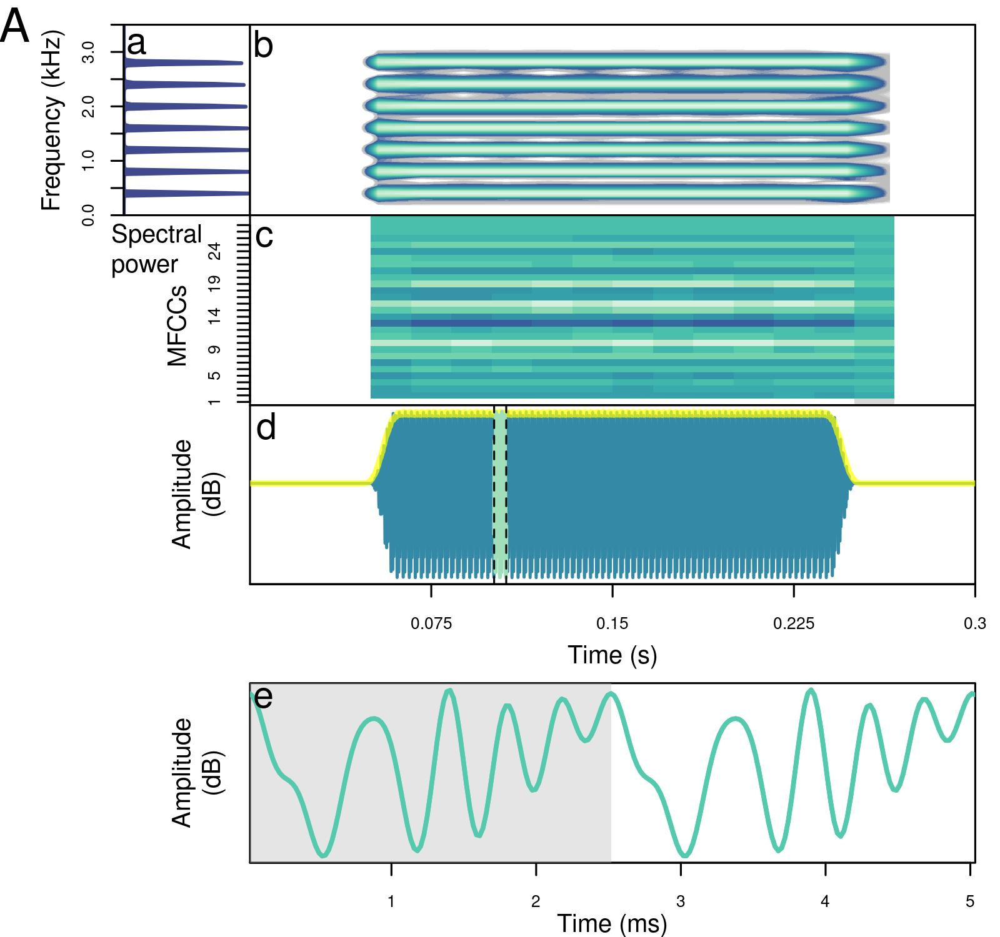
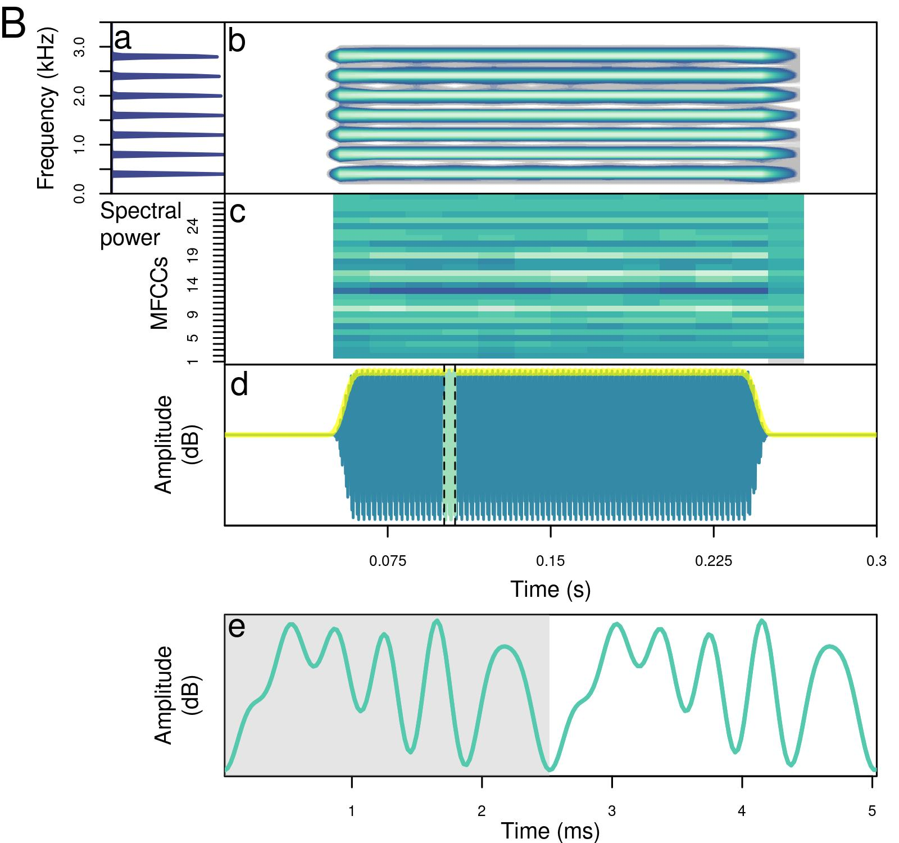
Fig. 1: Zebra finch AFS example
Code
dat <- imp_raven(path = "./data/raw/additional_species/zebra_finch_from_celia/",
warbler.format = TRUE, all.data = TRUE, name.from.file = TRUE,
ext.case = "lower")
dat$sound.files <- "10A_stack.wav"
dat <- dat[c(1, 1), ]
dat$type <- c("AFS", "call")
dat$start[2] <- 0.01
dat$end[2] <- 0.15
dat$selec <- 1:2
flim <- c(0, 8)
cx <- 1
cs <- check_sels(dat, path = "./data/raw/additional_species/zebra_finch_from_celia/")
jpeg(file = "./output/figures/fig1_zebra_finch_call.jpg", width = 2000,
height = 1200, res = 300)
mat <- matrix(c(1, 2, 5, 3, 6, 4), ncol = 2, byrow = TRUE)
layout(mat, widths = c(0.3, 1), heights = c(1, 1.2, 1.2))
# layout.show(n = 6)
full_call <- read_sound_file(dat, index = 2, path = "./data/raw/additional_species/zebra_finch_from_celia/")
# power spectrum
spc <- seewave::meanspec(wave = full_call, plot = FALSE, ovlp = 50,
wl = 1000, PSD = TRUE)
par(mar = c(0, 4.6, 1, 0))
plot(spc[, 2:1], type = "l", ylab = "", xlab = "", ylim = flim, col = mako(10)[4],
lwd = 2, xaxt = "n", yaxt = "n", xaxs = "i", yaxs = "i")
text(x = 0.09, y = flim[2] - 0.8, labels = "a", cex = cx + 1)
polygon(x = spc[, 2], y = spc[, 1], col = mako(10)[4], border = NA)
axis(2, cex.axis = cx)
par(xpd = TRUE) #Draw outside plot area
text(x = -0.47, y = 4, "Frequency\n(kHz)", srt = 90, cex = 1.5)
par(xpd = FALSE) #Draw outside plot area
mtext(text = "Spectral\npower", side = 1, line = 2, adj = 0.1, cex = cx)
# spectrogram
par(mar = c(0, 0, 1, 1))
# create color palette
cp <- colorRampPalette(c("white", "white", "white", "white", "gray",
"gray", viridis::mako(10, begin = 0.4)))
warbleR:::spectro_wrblr_int2(full_call, flim = flim, wl = 1000, palette = cp,
grid = FALSE, collevels = seq(-60, 0, 1), ovlp = 99, axisY = FALSE,
flab = "", axisX = FALSE)
text(x = 0.0024, y = flim[2] - 0.8, labels = "b", cex = cx + 1)
cp2 <- colorRampPalette(c(viridis::mako(10, begin = 0.4), "gray",
"white"))
par(mar = c(3, 0, 0, 1))
plot(full_call@left, type = "l", xlab = "", col = mako(10)[6], lwd = 1.6,
xaxt = "n", yaxt = "n", xaxs = "i")
text(x = 100, y = max(full_call@left) * 0.9, labels = "c", cex = cx +
1)
mtext(text = "Amplitude \n(dB) ", side = 2, line = 0.5, cex = cx)
# add amplitude envelope
amp_env <- env(full_call, envt = "abs", ssmooth = 300, plot = FALSE)
amp_env <- amp_env * max(full_call@left)/max(amp_env)
lines(x = seq(1, length(full_call@left), length.out = nrow(amp_env)),
y = amp_env[, 1], col = adjustcolor("yellow", alpha.f = 0.7),
lwd = 3)
# highlight segment
clp_start <- 0.0451
clp_end <- 0.0513
indx <- round(clp_start * full_call@samp.rate, 0):round(clp_end *
full_call@samp.rate, 0)
sub <- full_call@left[indx]
lines(x = indx, y = sub, type = "l", col = mako(10)[9], lwd = 2)
abline(v = clp_start * full_call@samp.rate, col = "gray4", lty = 2)
abline(v = clp_end * full_call@samp.rate, col = "gray4", lty = 2)
at <- seq(0, length.out = 5, by = 0.2 * length(full_call@left))
labs <- seq(0, duration(full_call), length.out = 5)
at <- labs * full_call@samp.rate
axis(1, at = at, labels = labs, cex.axis = cx)
mtext(text = "Time (s)", side = 1, line = 2.1, adj = 0.5, cex = cx)
# AFS waveform
par(mar = c(3, 0, 0.5, 1))
# clp_200ms_1 <- read_sound_file(est_single, index =
# which(est_schr$sf == schr1)) clp_200ms_1@left <-
# c(clp_200ms_1@left, clp_200ms_1@left)
clp_call <- cutw(full_call, from = clp_start, to = clp_end, output = "Wave",
units = "seconds")
plot(clp_call@left, type = "l", ylab = "Amplitude", xlab = "", col = mako(10)[8],
lwd = 2.4, xaxt = "n", yaxt = "n", xaxs = "i")
mtext(text = "Amplitude\n(dB)", side = 2, line = 0.5, cex = cx)
dur_clp <- duration(clp_call) + 5e-05
rect(xleft = dur_clp/3 * full_call@samp.rate, xright = dur_clp/3 *
full_call@samp.rate * 2, ybottom = -1e+05, ytop = 1e+06, , col = adjustcolor("gray",
0.25), border = NA)
rect(xleft = dur_clp/3 * full_call@samp.rate * 2, xright = dur_clp/3 *
full_call@samp.rate * 3, ybottom = -1e+05, ytop = 1e+06, , col = adjustcolor("gray",
0.5), border = NA)
lines(x = seq_along(clp_call@left), clp_call@left, col = mako(10)[8],
lwd = 2.4)
text(x = 5, y = max(clp_call@left) * 0.9, labels = "d", cex = cx +
1)
at <- seq(0, length.out = 5, by = 0.2 * length(sil_wv_200ms_1@left))
labs <- seq(0, duration(clp_call), by = 0.001)
at <- labs * sil_wv_200ms_1@samp.rate
labs <- round(labs * 1000, 2)
axis(1, at = at, labels = labs, cex.axis = cx)
mtext(text = "Time (ms)", side = 1, line = 2.1, adj = 0.5, cex = cx)
dev.off()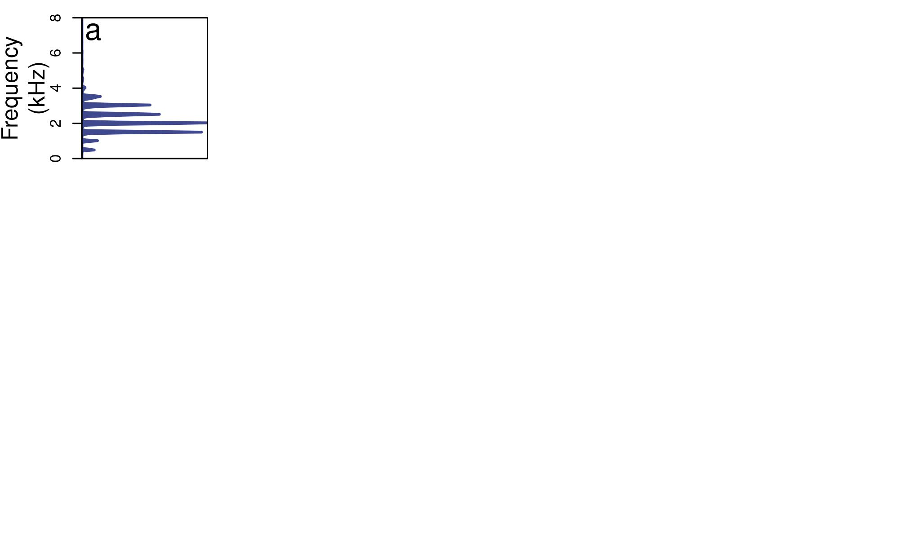
Fig. 3: Other species (only the first 3 recordings listed in the spreadsheet are used)
Code
othr_sp <- readxl::read_xlsx("./data/raw/additional_species/AFS_FigB_SpeciesRecordingTimePoints.xlsx")
othr_sp <- as.data.frame(othr_sp)
# select the string of characters before the first '_'
othr_sp$species <- sapply(othr_sp$Recording, function(x) unlist(strsplit(x,
"_"))[1])
othr_sp$species[1] <- "Zebra finch"
othr_sp$species[2] <- "White-crowned sparrow"
othr_sp$species[3] <- "House wren"
flim <- c(0, 10)
cx <- 1
jpeg(file = "./output/figures/fig3_other_species.jpg", width = 3000,
height = 1500, res = 300)
mar <- 0.02
ovlp <- 99
# create color palette
cp <- colorRampPalette(c("white", "white", "white", "white", "gray",
"gray", viridis::mako(10, begin = 0.4)))
cp2 <- colorRampPalette(c(viridis::mako(10, begin = 0.4), "gray",
"white"))
mat <- matrix(c(1:12), ncol = 3, byrow = FALSE)
layout(mat, widths = c(1.2, 1, 1), heights = c(1.3, 1, 1.3, 1.3))
# layout.show(n = 12)
for (i in 1:3) {
# spectrogram full recording
par_mar <- if (i == 1) {
c(2.5, 5, 0.45, 1)
} else {
c(2.5, 0, 0.45, 1)
}
par(mar = par_mar)
full_rec <- readWave(filename = file.path("./data/raw/additional_species/",
othr_sp$Recording[i]), from = 0, to = Inf, units = "seconds")
warbleR:::spectro_wrblr_int2(full_rec, flim = flim, wl = if (i ==
3)
200 else 512, palette = cp, grid = FALSE, collevels = seq(-60, 0,
1), ovlp = ovlp, axisY = FALSE, flab = "", axisX = T)
mtext(text = "Time (s)", side = 1, line = 2.1, adj = 0.5, cex = cx)
abline(v = othr_sp$`Spectrogram_OneNote_Start(s)`[i] - mar, col = adjustcolor("gray4",
alpha.f = 0.6), lty = 2)
abline(v = othr_sp$`Spectrogram_OneNote_End(s)`[i] + mar, col = adjustcolor("gray4",
alpha.f = 0.6), lty = 2)
if (i == 1) {
par(xpd = TRUE) #Draw outside plot area
mtext(text = "Frequency\n(kHz)", side = 2, line = 2.1, adj = 0.5,
cex = cx)
axis(2, cex.axis = cx)
}
text(x = 0, y = flim[2] - 1.3, labels = othr_sp$species[i], cex = cx +
0.4, pos = 4)
# spectrogram 1 unit
par_mar <- if (i == 1) {
c(0, 5, 1, 1)
} else {
c(0, 0, 1, 1)
}
par(mar = par_mar)
full_call <- readWave(filename = file.path("./data/raw/additional_species/",
othr_sp$Recording[i]), from = othr_sp$`Spectrogram_OneNote_Start(s)`[i] -
mar, to = othr_sp$`Spectrogram_OneNote_End(s)`[i] + mar, units = "seconds")
warbleR:::spectro_wrblr_int2(full_call, flim = flim, wl = if (i ==
3)
200 else 512, palette = cp, grid = FALSE, collevels = seq(-60, 0,
1), ovlp = ovlp, axisY = FALSE, flab = "", axisX = FALSE)
par(xpd = TRUE) #Draw outside plot area
if (i == 1) {
mtext(text = "Frequency\n(kHz)", side = 2, line = 2.1, adj = 0.5,
cex = cx)
axis(2, cex.axis = cx)
}
par_mar <- if (i == 1) {
c(3, 5, 0, 1)
} else {
c(3, 0, 0, 1)
}
par(mar = par_mar)
plot(full_call@left, type = "l", xlab = "", col = mako(10)[6],
lwd = 1.6, xaxt = "n", yaxt = "n", xaxs = "i", ylab = "")
if (i == 1) {
mtext(text = "Amplitude \n(dB) ", side = 2, line = 0.5,
cex = cx)
}
at <- seq(0, length.out = 5, by = 0.2 * length(full_call@left))
labs <- seq(0, duration(full_call), by = 0.05)
at <- labs * full_call@samp.rate
axis(1, at = at, labels = labs, cex.axis = cx)
mtext(text = "Time (s)", side = 1, line = 2.1, adj = 0.5, cex = cx)
# highlight segment
clp_start <- othr_sp$`FineStructure_Start(s)`[i] - othr_sp$`Spectrogram_OneNote_Start(s)`[i] +
mar
clp_end <- othr_sp$`FineStructure_End(s)`[i] - othr_sp$`Spectrogram_OneNote_Start(s)`[i] +
mar
indx <- round(clp_start * full_call@samp.rate, 0):round(clp_end *
full_call@samp.rate, 0)
sub <- full_call@left[indx]
par(xpd = FALSE)
lines(x = indx, y = sub, type = "l", col = mako(10)[9], lwd = 2)
abline(v = clp_start * full_call@samp.rate, col = "gray4", lty = 2)
abline(v = clp_end * full_call@samp.rate, col = "gray4", lty = 2)
# add amplitude envelope
amp_env <- env(full_call, envt = "abs", ssmooth = 300, plot = FALSE)
amp_env <- amp_env * max(full_call@left)/max(amp_env)
lines(x = seq(1, length(full_call@left), length.out = nrow(amp_env)),
y = amp_env[, 1], col = adjustcolor("yellow", alpha.f = 0.7),
lwd = 3)
# AFS waveform\
par_mar <- if (i == 1) {
c(3, 5, 0.5, 1)
} else {
c(3, 0, 0.5, 1)
}
par(mar = par_mar)
clp_call <- cutw(full_call, from = clp_start, to = clp_end, output = "Wave",
units = "seconds")
plot(clp_call@left, type = "l", ylab = "", xlab = "", col = mako(10)[8],
lwd = 2.4, xaxt = "n", yaxt = "n", xaxs = "i")
if (i == 1) {
mtext(text = "Amplitude\n(dB)", side = 2, line = 0.5, cex = cx)
}
at <- seq(0, length.out = 5, by = 0.2 * length(clp_call@left))
labs <- seq(0, duration(clp_call), by = 0.001)
at <- labs * clp_call@samp.rate
labs <- round(labs * 1000, 2)
axis(1, at = at, labels = labs, cex.axis = cx)
mtext(text = "Time (ms)", side = 1, line = 2.1, adj = 0.5, cex = cx)
}
dev.off()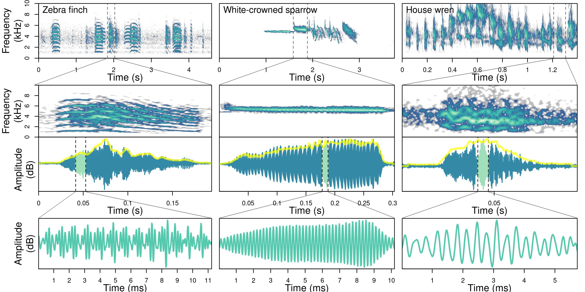
Fig. 4: Diagram of the sliding-window waveform comparison
Code
png(file = "./output/figures/fig4_waveform_comparison_diagram.png",
width = 3100, height = 1420, res = 300)
ss1 <- make_single_schroeder(n.components = 7, samp.rate = 44100,
f0 = 400, dur = 25, save.wave = FALSE, plot = FALSE, scalar = -1,
color = viridis(10)[3], random.start = FALSE, add.margin = FALSE)
# scale between 0 and 1
ss1@left <- (ss1@left - min(ss1@left))/(max(ss1@left) - min(ss1@left))
ss2 <- make_single_schroeder(n.components = 5, samp.rate = 44100,
f0 = 300, dur = 25, save.wave = FALSE, plot = FALSE, scalar = -1,
color = viridis(10)[3], random.start = FALSE, add.margin = FALSE)
# scale between 0 and 1
ss2@left <- (ss2@left - min(ss2@left))/(max(ss2@left) - min(ss2@left))
# remove margins dev.off()
par(mar = c(0, 0, 0, 0))
cex <- 1.2
point_samp <- 80
pos <- c(0, 1.5, 3, 4.6, 4.7) * 1.3
# empty plot no box
plot(1, type = "n", xlab = "", ylab = "", xlim = c(-0.2, 2.8), ylim = c(-7.5,
2), xaxt = "n", yaxt = "n", bty = "n", xaxs = "i", yaxs = "i")
text(x = -0.1, y = 0.5, labels = "A", cex = cex)
text(x = 0.5, y = -pos[1] + 1.5, labels = "Schroeder 1", cex = cex)
lines(x = seq(0, 1, along.with = ss1@left), y = ss1@left, col = viridis(10)[3],
lwd = 3)
text(x = 2, y = -pos[1] + 1.5, labels = "Schroeder 2", cex = cex)
lines(x = seq(1.2, 2.7, along.with = ss2@left), y = ss2@left, col = viridis(10)[6],
lwd = 3)
# approx()
# resample to equal size
text(x = -0.1, y = -pos[2] + 0.5, labels = "B", cex = cex)
text(x = 1.25, y = -pos[2] + 1.5, labels = "Resample to equal length",
cex = 1.2)
points(x = seq(0, 1, length.out = point_samp), y = approx(ss1@left,
n = point_samp)$y - pos[2], col = viridis(10)[3], cex = 0.7)
lines(x = seq(0, 1, along.with = ss1@left), y = ss1@left - pos[2],
col = viridis(10, alpha = 0.3)[3], lwd = 2)
points(x = seq(1.2, 2.2, length.out = point_samp), y = approx(ss2@left,
n = point_samp)$y - pos[2], col = viridis(10)[6], cex = 0.7)
lines(x = seq(1.2, 2.2, along.with = ss2@left), y = ss2@left - pos[2],
col = viridis(10, alpha = 0.3)[6], lwd = 2)
# duplicate
text(x = -0.1, y = -pos[3] + 0.5, labels = "C", cex = cex)
text(x = 1.25, y = -pos[3] + 1.5, labels = "Duplicate 1 Schroeder",
cex = 1.2)
points(x = seq(0, 1, length.out = point_samp), y = approx(ss1@left,
n = point_samp)$y - pos[3], col = viridis(10)[3], cex = 0.7)
lines(x = seq(0, 1, along.with = ss1@left), y = ss1@left - pos[3],
col = viridis(10, alpha = 0.3)[3], lwd = 2)
# polygon on top
polygon(x = c(0, 1.02, 1.02, 0) + 1, y = c(0, 0, 1, 1) - pos[3], col = adjustcolor("gray",
alpha.f = 0.3), border = NA)
polygon(x = c(-0.02, 1, 1, -0.02), y = c(0, 0, 1, 1) - pos[3], col = NA,
border = adjustcolor("gray", alpha.f = 0.3))
points(x = seq(1, 2, length.out = point_samp), y = approx(ss1@left,
n = point_samp)$y - pos[3], col = viridis(10)[3], cex = 0.7, pch = 1)
lines(x = seq(0, 1, along.with = ss1@left) + 1, y = ss1@left - pos[3],
col = viridis(10, alpha = 0.3)[3], lwd = 2)
# sliding window
text(x = -0.1, y = -pos[4] + 0.5, labels = "D", cex = cex)
text(x = 1.25, y = -pos[4] + 1.5, labels = "Sliding window matching",
cex = 1.2)
for (i in 1:2) {
points(x = seq(i - 1, i, length.out = point_samp), y = approx(ss1@left,
n = point_samp)$y - pos[5] - 1, col = viridis(10)[3], cex = 0.7,
pch = 1)
lines(x = seq(0, 1, along.with = ss1@left) + i - 1, y = ss1@left -
pos[5] - 1, col = viridis(10, alpha = 0.3)[3], lwd = 2)
}
points(x = seq(0, 1, length.out = point_samp) + 0.7, y = approx(ss2@left,
n = point_samp)$y - pos[4], col = viridis(10, alpha = 0.6)[6],
cex = 0.7)
lines(x = seq(0, 1, along.with = ss2@left) + 0.7, y = ss2@left - pos[4],
col = viridis(10, alpha = 0.3)[6], lwd = 2)
alpha <- 0.5
# add arrow
arrows(x0 = 0.1, y0 = -pos[4] + 0.5, x1 = 1.9, y1 = -pos[4] + 0.5,
col = adjustcolor("black", alpha.f = 0.3), length = 0.16, lwd = 2.5)
pos_slid <- seq(0.7, -0.2, length.out = 80)
# exponential increase
alph_slid <- exp(seq(100, 93, length.out = length(pos_slid)))
# force it to range 0-0.15
alph_slid <- alph_slid/max(alph_slid) * 0.15
# alph_slid <- seq(0.15, 0, length.out = 40)
for (i in seq_along(pos_slid)) {
points(x = seq(0, 1, length.out = point_samp) + pos_slid[i], y = approx(ss2@left,
n = point_samp)$y - pos[4], col = viridis(10, alpha = alph_slid[i])[6],
cex = 0.7)
}
dev.off()png
2 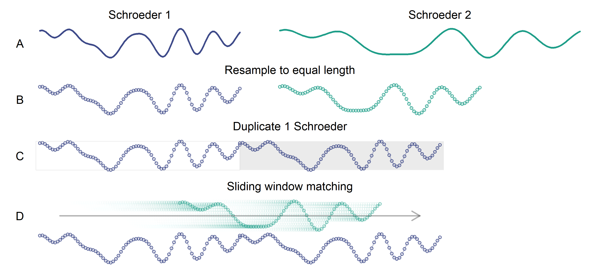
Fig. 2: Example Schroeder pairs
Code
jpeg(file = "./output/figures/fig2_schroeder_examples.jpg", width = 3000,
height = 1500, res = 300)
schroeder_df <- data.frame(name = c("5p", "5n", "8p", "8n"), n.components = c(5,
5, 8, 8), scalar = c(-1, 1, -1, 1), wav = c("f0-400_ncomp-5_pos.wav_1",
"f0-400_ncomp-5_neg.wav_1", "f0-400_ncomp-8_pos.wav_1", "f0-400_ncomp-8_neg.wav_1"))
schroeder_df$letter <- LETTERS[1:nrow(schroeder_df)]
schroeder_df <- schroeder_df[c(3, 4, 1, 2), ]
schroeder_df$freq_lab <- c(T, T, F, F)
schroeder_df$amp_lab <- c(T, F, T, F)
est_schr <- readRDS("./data/processed/extended_selection_table_200ms_schroeders.RDS")
est_schr$sf <- substr(est_schr$sound.files, start = 5, stop = 1000)
flim <- c(0, 4)
cx <- 1
mat <- matrix(1:20, ncol = 4, byrow = TRUE)
mat <- mat[c(3, 2, 4, 1, 5), ]
mat <- cbind(21:25, mat, 26:30)
layout(mat, heights = c(0.3, 1, 0.3, 1, 0.5), widths = c(0.1, 0.5,
1, 0.5, 1, 0.05))
# layout.show(n = nrow(mat) * ncol(mat))
for (i in 1:nrow(schroeder_df)) {
short_sch <- make_single_schroeder(n.components = schroeder_df$n.components[i],
samp.rate = 44100, f0 = 400, dur = 25, save.wave = FALSE,
plot = FALSE, scalar = schroeder_df$scalar[i], color = viridis(10)[3],
random.start = FALSE, add.margin = FALSE)
# scale between 0 and 1
short_sch@left <- (short_sch@left - min(short_sch@left))/(max(short_sch@left) -
min(short_sch@left))
lng_sch <- read_sound_file(est_schr, index = which(est_schr$sf ==
schroeder_df$wav[i]))
spc <- seewave::meanspec(wave = lng_sch, plot = FALSE, ovlp = 50,
wl = 2100, PSD = TRUE)
par(mar = c(0, 1, 0, 0))
plot(spc[, 1:2], type = "l", ylab = "", xlab = "", xlim = flim,
col = mako(10)[4], lwd = 2, xaxt = "n", yaxt = "n", xaxs = "i",
yaxs = "i")
text(x = 0.1, y = flim[2] - 0.2, labels = "a", cex = cx + 1)
polygon(x = spc[, 1], y = spc[, 2], col = mako(10)[4], border = NA)
mtext(text = paste0(" ",
schroeder_df$n.components[i], " components, ", ifelse(schroeder_df$scalar[i] ==
1, "positive phase", "negative phase")), side = 3, line = 1,
cex = cx)
if (schroeder_df$freq_lab[i]) {
axis(1, cex.axis = cx)
mtext(text = "Frequency (kHz)", side = 1, line = 2.4, adj = 0.5,
cex = cx)
}
if (schroeder_df$amp_lab[i])
mtext(text = "Spectral power ", side = 2, line = 1, adj = 0.5,
cex = cx)
mtext(schroeder_df$letter[i], side = 2, line = -1, at = 1.1, las = 1,
cex = 1.5)
if (i %in% c(1, 3))
par(mar = c(0, 2, 0, 0)) else par(mar = c(0, 0, 0, 0))
plot(short_sch@left, type = "l", ylab = "", xlab = "", col = mako(10)[8],
lwd = 2.4, xaxt = "n", yaxt = "n", xaxs = "i")
if (i %in% c(1, 3))
mtext(text = "Amplitude", side = 2, line = 0.4, adj = 0.5,
cex = cx)
at <- seq(0, length.out = 5, by = 0.2 * length(lng_sch@left))
labs <- seq(0, duration(short_sch), length.out = 5)
at <- labs * lng_sch@samp.rate
labs <- round(labs * 1000, 1)
if (schroeder_df$freq_lab[i]) {
axis(1, at = at, labels = labs, cex.axis = cx)
mtext(text = "Time (ms)", side = 1, line = 2.4, adj = 0.5,
cex = cx)
}
}
dev.off()png
2 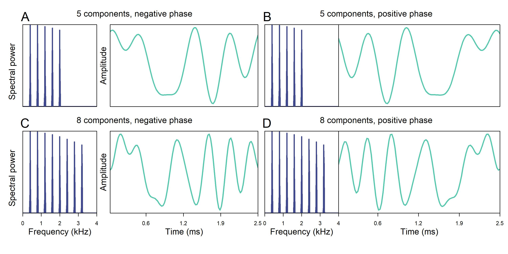
Session information
─ Session info ───────────────────────────────────────────────────────────────
setting value
version R version 4.6.1 (2026-06-24 ucrt)
os Windows 11 x64 (build 22631)
system x86_64, mingw32
ui RTerm
language (EN)
collate Spanish_Costa Rica.utf8
ctype Spanish_Costa Rica.utf8
tz America/Costa_Rica
date 2026-10-04
pandoc 3.8.3 @ C:\\Program Files\\RStudio\\resources\\app\\bin\\quarto\\bin\\tools/ (via rmarkdown)
quarto NA
─ Packages ───────────────────────────────────────────────────────────────────
package * version date (UTC) lib source
abind 1.4-8 2024-09-12 [1] CRAN (R 4.6.0)
backports 1.5.1 2026-04-03 [1] CRAN (R 4.6.0)
baRulho * 2.1.7 2026-10-04 [1] Github (maRce10/baRulho@435225e)
bitops 1.1-0 2026-07-30 [1] CRAN (R 4.6.1)
brio 1.1.5 2024-04-24 [1] CRAN (R 4.6.1)
cachem 1.1.0 2024-05-16 [1] CRAN (R 4.6.1)
cellranger 1.1.0 2016-07-27 [1] CRAN (R 4.6.1)
checkmate 2.3.4 2026-02-03 [1] CRAN (R 4.6.1)
class 7.3-23 2025-01-01 [2] CRAN (R 4.6.1)
classInt 0.4-11 2025-01-08 [1] CRAN (R 4.6.1)
cli 3.6.6 2026-04-09 [1] CRAN (R 4.6.1)
cluster 2.1.8.2 2026-02-05 [2] CRAN (R 4.6.1)
codetools 0.2-20 2024-03-31 [2] CRAN (R 4.6.1)
crayon 1.5.3 2024-06-20 [1] CRAN (R 4.6.1)
curl 7.1.0 2026-04-22 [1] CRAN (R 4.6.1)
DBI 1.3.0 2026-02-25 [1] CRAN (R 4.6.1)
deldir 2.0-4 2024-02-28 [1] CRAN (R 4.6.1)
Deriv 4.3.0 2026-07-23 [1] CRAN (R 4.6.1)
devtools 2.5.2 2026-04-30 [1] CRAN (R 4.6.1)
digest 0.6.39 2025-11-19 [1] CRAN (R 4.6.1)
dplyr 1.2.1 2026-04-03 [1] CRAN (R 4.6.1)
dtw * 1.23-3 2026-06-09 [1] CRAN (R 4.6.1)
e1071 1.7-17 2025-12-18 [1] CRAN (R 4.6.1)
ecodist * 2.1.3 2023-10-30 [1] CRAN (R 4.6.1)
ellipsis 0.3.3 2026-04-04 [1] CRAN (R 4.6.1)
evaluate 1.0.5 2025-08-27 [1] CRAN (R 4.6.1)
farver 2.1.2 2024-05-13 [1] CRAN (R 4.6.1)
fastmap 1.2.0 2024-05-15 [1] CRAN (R 4.6.1)
fftw 1.0-9 2024-09-20 [1] CRAN (R 4.6.0)
formatR * 1.14 2023-01-17 [1] CRAN (R 4.6.1)
fs 2.1.0 2026-04-18 [1] CRAN (R 4.6.1)
generics 0.1.4 2025-05-09 [1] CRAN (R 4.6.1)
ggplot2 * 4.0.3 2026-04-22 [1] CRAN (R 4.6.1)
glue 1.8.1 2026-04-17 [1] CRAN (R 4.6.1)
goftest 1.2-3 2021-10-07 [1] CRAN (R 4.6.1)
gridExtra 2.3.1 2026-06-25 [1] CRAN (R 4.6.1)
gtable 0.3.6 2024-10-25 [1] CRAN (R 4.6.1)
htmltools 0.5.9 2025-12-04 [1] CRAN (R 4.6.1)
htmlwidgets 1.6.4 2023-12-06 [1] CRAN (R 4.6.1)
httr 1.4.8 2026-02-13 [1] CRAN (R 4.6.1)
igraph 2.3.3 2026-06-26 [1] CRAN (R 4.6.1)
jsonlite 2.0.0 2025-03-27 [1] CRAN (R 4.6.1)
kableExtra * 1.4.1 2026-07-08 [1] CRAN (R 4.6.1)
KernSmooth 2.23-26 2025-01-01 [2] CRAN (R 4.6.1)
knitr * 1.51 2025-12-20 [1] CRAN (R 4.6.1)
lattice 0.22-9 2026-02-09 [2] CRAN (R 4.6.1)
lifecycle 1.0.5 2026-01-08 [1] CRAN (R 4.6.1)
magrittr 2.0.5 2026-04-04 [1] CRAN (R 4.6.1)
MASS 7.3-65 2025-02-28 [2] CRAN (R 4.6.1)
Matrix 1.7-5 2026-03-21 [2] CRAN (R 4.6.1)
memoise 2.0.1 2021-11-26 [1] CRAN (R 4.6.1)
mgcv 1.9-4 2025-11-07 [2] CRAN (R 4.6.1)
NatureSounds * 1.0.5 2025-01-17 [1] CRAN (R 4.6.1)
nicheROVER 1.1.2 2023-10-13 [1] CRAN (R 4.6.1)
nlme 3.1-169 2026-03-27 [2] CRAN (R 4.6.1)
numform * 0.7.0 2021-10-09 [1] CRAN (R 4.6.1)
ohun * 1.0.4 2025-10-22 [1] CRAN (R 4.6.1)
otel 0.2.0 2025-08-29 [1] CRAN (R 4.6.1)
packrat 0.9.3 2025-06-16 [1] CRAN (R 4.6.1)
pbapply 1.7-4 2025-07-20 [1] CRAN (R 4.6.1)
permute 0.9-10 2026-02-06 [1] CRAN (R 4.6.1)
PhenotypeSpace * 0.1.1 2026-10-04 [1] Github (maRce10/PhenotypeSpace@6e3b9a8)
pillar 1.11.1 2025-09-17 [1] CRAN (R 4.6.1)
pkgbuild 1.4.8 2025-05-26 [1] CRAN (R 4.6.1)
pkgconfig 2.0.3 2019-09-22 [1] CRAN (R 4.6.1)
pkgload 1.5.3 2026-06-15 [1] CRAN (R 4.6.1)
png 0.1-9 2026-03-15 [1] CRAN (R 4.6.0)
polyclip 1.10-7 2024-07-23 [1] CRAN (R 4.6.1)
proxy * 0.4-29 2025-12-29 [1] CRAN (R 4.6.1)
purrr 1.2.2 2026-04-10 [1] CRAN (R 4.6.1)
R6 2.6.1 2025-02-15 [1] CRAN (R 4.6.1)
ragg 1.5.2 2026-03-23 [1] CRAN (R 4.6.1)
raster 3.6-32 2025-03-28 [1] CRAN (R 4.6.1)
RColorBrewer 1.1-3 2022-04-03 [1] CRAN (R 4.6.0)
Rcpp 1.1.2 2026-07-05 [1] CRAN (R 4.6.1)
RCurl 1.98-1.19 2026-06-03 [1] CRAN (R 4.6.1)
readxl * 1.5.0 2026-05-16 [1] CRAN (R 4.6.1)
remotes 2.5.0 2024-03-17 [1] CRAN (R 4.6.1)
rjson 0.2.23 2024-09-16 [1] CRAN (R 4.6.0)
rlang 1.3.0 2026-07-05 [1] CRAN (R 4.6.1)
rmarkdown 2.32 2026-09-01 [1] CRAN (R 4.6.1)
Rraven * 1.0.16 2025-10-23 [1] CRAN (R 4.6.1)
rstudioapi 0.19.0 2026-06-11 [1] CRAN (R 4.6.1)
S7 0.2.2 2026-04-22 [1] CRAN (R 4.6.1)
scales 1.4.0 2025-04-24 [1] CRAN (R 4.6.1)
seewave * 2.2.4 2025-08-19 [1] CRAN (R 4.6.1)
sessioninfo 1.2.4 2026-06-04 [1] CRAN (R 4.6.1)
sf 1.1-3 2026-09-11 [1] CRAN (R 4.6.1)
signal 1.8-1 2024-06-26 [1] CRAN (R 4.6.1)
Sim.DiffProc 5.0 2025-12-13 [1] CRAN (R 4.6.1)
sketchy 1.0.5 2025-01-16 [1] CRAN (R 4.6.1)
soundgen * 3.0.0 2026-09-20 [1] CRAN (R 4.6.1)
sp 2.2-3 2026-07-19 [1] CRAN (R 4.6.1)
spatstat.data 3.1-9 2025-10-18 [1] CRAN (R 4.6.1)
spatstat.explore 3.8-3 2026-09-23 [1] CRAN (R 4.6.1)
spatstat.geom 3.8-3 2026-09-18 [1] CRAN (R 4.6.1)
spatstat.random 3.5-2 2026-09-22 [1] CRAN (R 4.6.1)
spatstat.sparse 3.2-0 2026-05-21 [1] CRAN (R 4.6.1)
spatstat.univar 3.2-0 2026-05-18 [1] CRAN (R 4.6.1)
spatstat.utils 3.2-5 2026-09-11 [1] CRAN (R 4.6.1)
stringi 1.8.9 2026-08-04 [1] CRAN (R 4.6.1)
stringr 1.6.0 2025-11-04 [1] CRAN (R 4.6.1)
svglite 2.2.2 2025-10-21 [1] CRAN (R 4.6.1)
systemfonts 1.3.2 2026-03-05 [1] CRAN (R 4.6.1)
tensor 1.5.1 2025-06-17 [1] CRAN (R 4.6.1)
terra 1.9-50 2026-09-08 [1] CRAN (R 4.6.1)
testthat 3.3.2 2026-01-11 [1] CRAN (R 4.6.1)
textshaping 1.0.5 2026-03-06 [1] CRAN (R 4.6.1)
tibble 3.3.1 2026-01-11 [1] CRAN (R 4.6.1)
tidyselect 1.2.1 2024-03-11 [1] CRAN (R 4.6.1)
tuneR * 1.4.7 2024-04-17 [1] CRAN (R 4.6.1)
units 1.0-1 2026-03-11 [1] CRAN (R 4.6.1)
usethis 3.2.1 2025-09-06 [1] CRAN (R 4.6.1)
vctrs 0.7.3 2026-04-11 [1] CRAN (R 4.6.1)
vegan 2.7-5 2026-05-25 [1] CRAN (R 4.6.1)
viridis * 0.6.5 2024-01-29 [1] CRAN (R 4.6.1)
viridisLite * 0.4.3 2026-02-04 [1] CRAN (R 4.6.1)
warbleR * 1.1.37 2025-10-22 [1] CRAN (R 4.6.1)
withr 3.0.3 2026-06-19 [1] CRAN (R 4.6.1)
xaringanExtra 0.8.0 2024-05-19 [1] CRAN (R 4.6.1)
xfun 0.60 2026-07-09 [1] CRAN (R 4.6.1)
xml2 1.6.0 2026-06-22 [1] CRAN (R 4.6.1)
yaml 2.3.12 2025-12-10 [1] CRAN (R 4.6.1)
[1] C:/Users/Biologia-UCR/AppData/Local/R/win-library/4.6
[2] C:/Program Files/R/R-4.6.1/library
* ── Packages attached to the search path.
──────────────────────────────────────────────────────────────────────────────